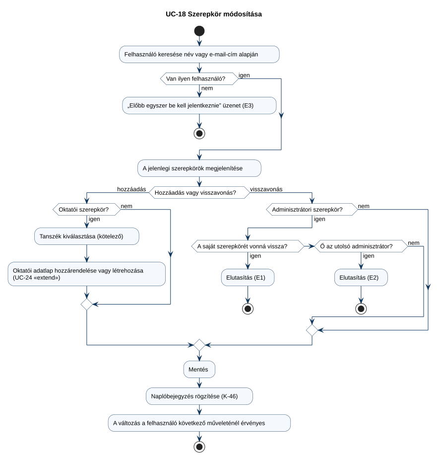
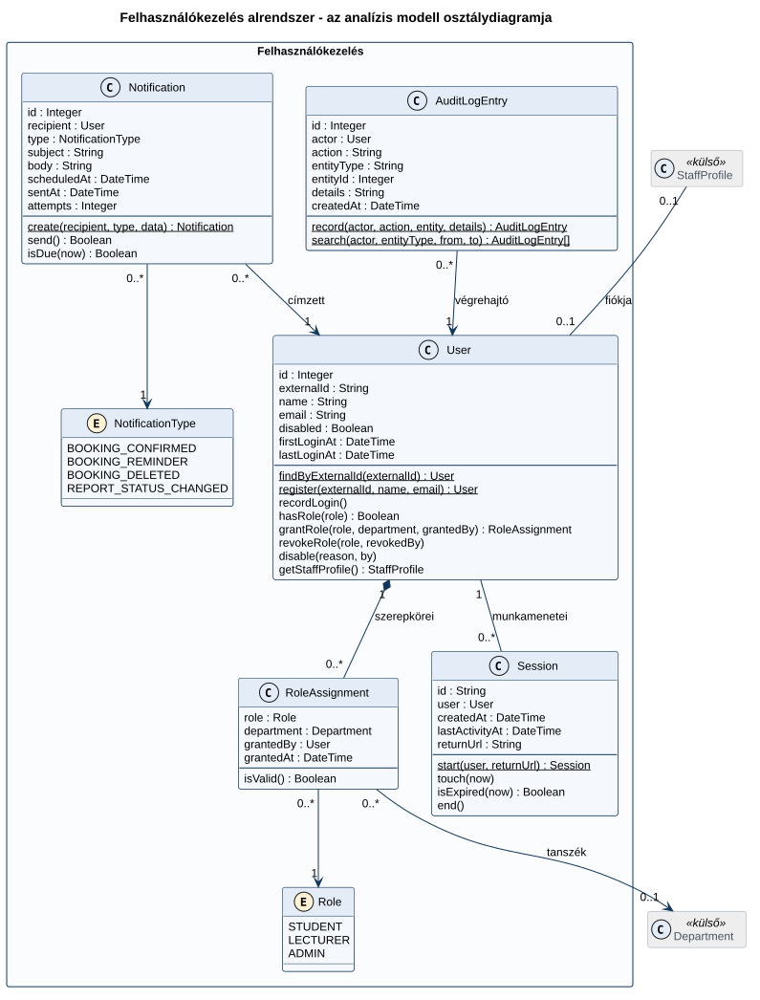
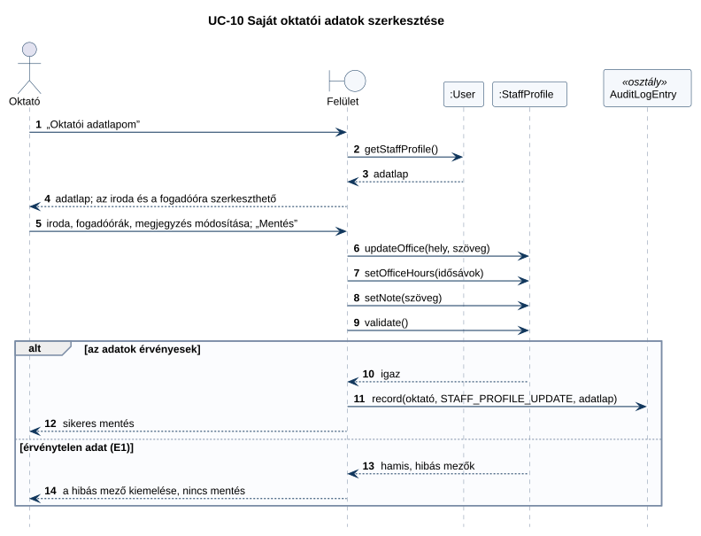
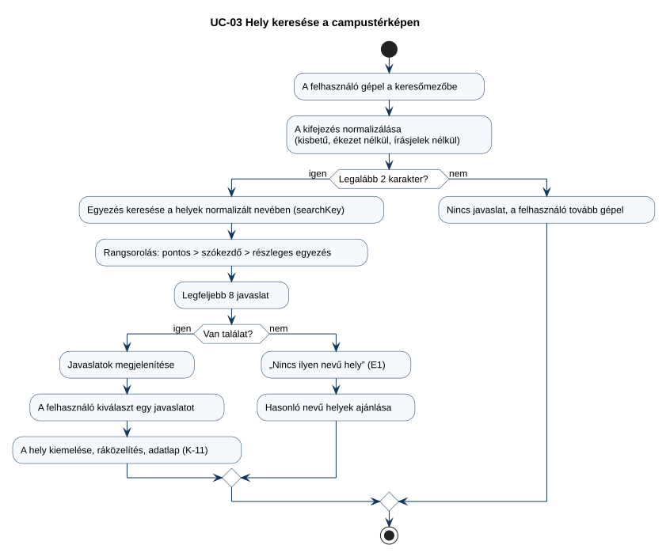
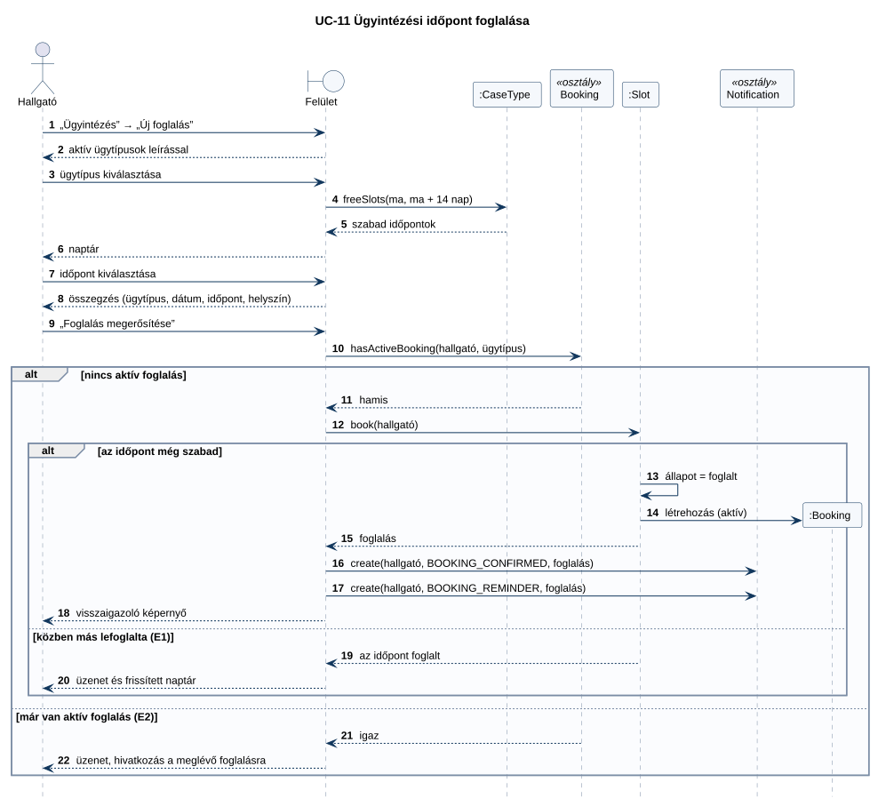
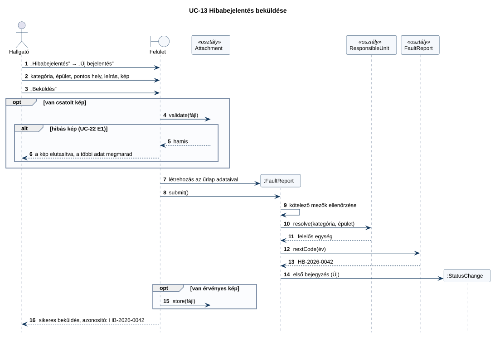
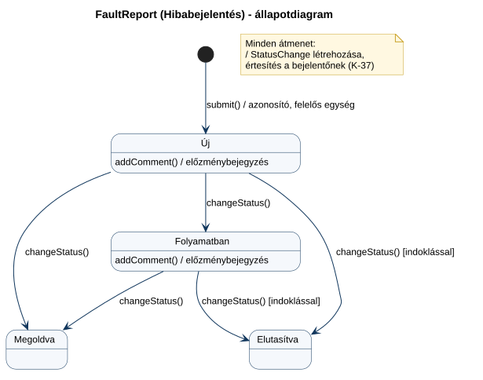
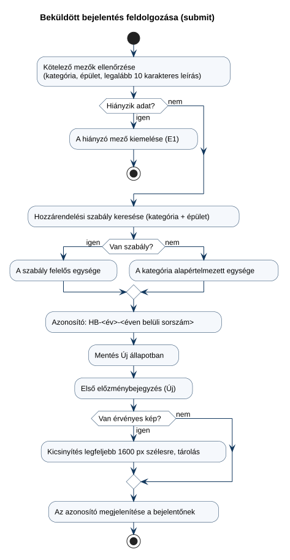
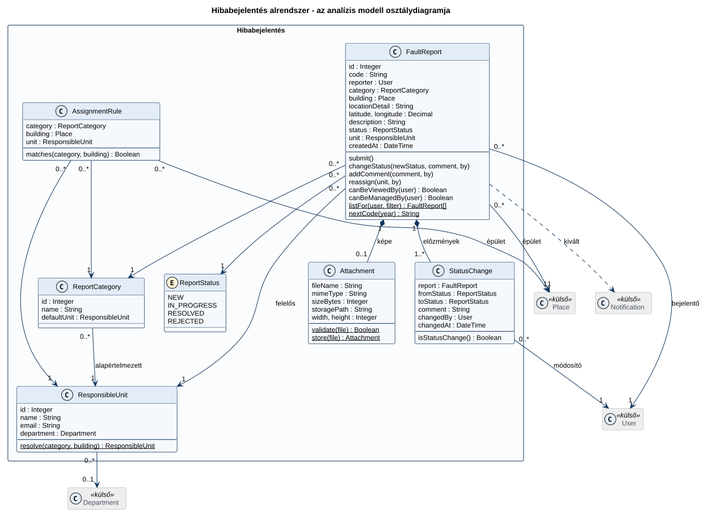

Címlap
Csoport neve: ME-nthetetlenek
Feladat sorszáma: 19
Feladat címe: Az uni-app jelenlegi funkcióinak gyakorlatiasabb átdolgozása
Analízis modell
Gyakorlatvezető:
Tompa Tamás
Csoporttagok:
| Név | Tankör | E-mail-cím |
|---|---|---|
| Csoportvezető: Dávid Gergő | G2-BP1 | gergo.david@student.uni-miskolc.hu |
| Győri Kristóf | G2-BP1 | kristof.gyori@student.uni-miskolc.hu |
| Maklári Máté | GE-BGI | mate.mate.165@gmail.com |
| Balázs Csenge Málna | GE-BGI | csenge.balazs.malna@student.uni-miskolc.hu |
| Nagy Virág | GE-BGI | virag.nagy@student.uni-miskolc.hu |
Beadás dátuma: 2026. 11. 16.
Történet
| Dátum | Verzió | Leírás | Szerző |
|---|---|---|---|
| 2026. 11. 14. | 1.0 | Kezdeti osztálydiagram, az osztályok felsorolása és a rendszer alrendszerekre bontása. A gyakorlatvezetővel való egyeztetésre készült változat. | ME-nthetetlenek |
| 2026. 11. 16. | 1.1 | Teljes analízis modell: alrendszerenként a statikus, a dinamikus és a funkcionális modell, az operációk, a végleges osztálydiagramok és az osztályok részletes leírása. | ME-nthetetlenek |
Tartalomjegyzék
- 1. Bevezetés
- 2. Kezdeti osztálydiagram
- 3. A Felhasználókezelés alrendszer modellje
- 3.1 Statikus modell
- 3.2 Dinamikus modell
- 3.3 Funkcionális modell
- 3.4 Operációk azonosítása
- 3.5 Az analízis modell osztálydiagramja
- 3.6 Az analízis modell osztályainak listája
- 4. A Szervezet és oktatók alrendszer modellje
- 4.1 Statikus modell
- 4.2 Dinamikus modell
- 4.3 Funkcionális modell
- 4.4 Operációk azonosítása
- 4.5 Az analízis modell osztálydiagramja
- 4.6 Az analízis modell osztályainak listája
- 5. A Tartalomkezelés alrendszer modellje
- 5.1 Statikus modell
- 5.2 Dinamikus modell
- 5.3 Funkcionális modell
- 5.4 Operációk azonosítása
- 5.5 Az analízis modell osztálydiagramja
- 5.6 Az analízis modell osztályainak listája
- 6. A Külső adatok alrendszer modellje
- 6.1 Statikus modell
- 6.2 Dinamikus modell
- 6.3 Funkcionális modell
- 6.4 Operációk azonosítása
- 6.5 Az analízis modell osztálydiagramja
- 6.6 Az analízis modell osztályainak listája
- 7. Az Ügyintézés alrendszer modellje
- 7.1 Statikus modell
- 7.2 Dinamikus modell
- 7.3 Funkcionális modell
- 7.4 Operációk azonosítása
- 7.5 Az analízis modell osztálydiagramja
- 7.6 Az analízis modell osztályainak listája
- 8. A Hibabejelentés alrendszer modellje
- 8.1 Statikus modell
- 8.2 Dinamikus modell
- 8.3 Funkcionális modell
- 8.4 Operációk azonosítása
- 8.5 Az analízis modell osztálydiagramja
- 8.6 Az analízis modell osztályainak listája
- 9. Mellékletek
1. Bevezetés
Ez a dokumentum a Vezérlőpult nevű rendszer objektumorientált analízisének eredményét, az analízis modellt írja le. Kiindulópontja a H3 határidőre elkészült szoftverkövetelmény-specifikáció (SRS), elsősorban a 3. fejezet use case-leírásai és funkcionális követelményei, valamint a H2 vízió dokumentum.
A dokumentum a tantárgyi minta szerint épül fel. A 2. fejezet a kezdeti (elemzési szintű) osztálydiagramot, az osztályok rövid leírását és a rendszer alrendszerekre bontását tartalmazza; ez megegyezik a dokumentum 1.0-s verziójával. A 3–8. fejezet alrendszerenként írja le a modellt: a kapcsolatok, az attribútumok és a bázisosztályok pontosítását (statikus modell), a legfontosabb use case-ek szekvencia- és állapotdiagramjait (dinamikus modell), a fontosabb feldolgozási lépéseket (funkcionális modell), az operációk azonosítását, végül az alrendszer osztálydiagramját és osztályainak részletes listáját. A 9. fejezet a mellékleteket tartalmazza.
Jelölések. Az ábrák UML 2 jelölést használnak, és PlantUML-lel készültek. Az osztályok, attribútumok és operációk neve az SRS 7.2 elnevezési konvenciója szerint angol (például Booking, canCancel()), mert ezek a nevek a megvalósításban is így jelennek meg; a leírások magyarok, és minden osztálynál szerepel a magyar megnevezés. A use case-ekre (UC-xx) és a követelményekre (K-xx) az SRS azonosítóival hivatkozunk. Az új szakkifejezéseket a szótár 2.0-s változata magyarázza.
2. Kezdeti osztálydiagram
Ebben a fázisban felvettük a listára minden valószínűsíthető osztályt, amely az SRS alapján a rendszerhez tartozik. Az osztályokat a use case-leírások főneveiből (például foglalás, időpont, bejelentés, megálló) és a funkcionális követelményekből gyűjtöttük ki, majd kiszűrtük közülük azokat, amelyek csak egy másik osztály tulajdonságai (például az iroda, az ár, az állapot) vagy a felület elemei (például a gomb, az űrlap, a lista). A külső rendszerek (azonosító szolgáltatás, menetrend-adatforrás, parkolóérzékelő-rendszer, e-mail-szolgáltatás) aktorok, ezért nem osztályok; a rendszeren belüli „lenyomatuk” viszont igen (például a SensorDevice az érzékelőeszközt képviseli).
Ezek a problématér osztályai, ezért ebben a munkafázisban csak a nevüket, egy rövid leírásukat és a köztük lévő asszociációkat gyűjtöttük össze.
2.1 Osztálydiagram
Az SRS use case-leírásaiból és követelményeiből kigyűjtött problématér-osztályok és a köztük lévő asszociációk. Ebben a fázisban csak az osztályok neve és a kapcsolatok neve szerepel; a számosságokat, az attribútumokat és az operációkat az alrendszerek modelljei pontosítják. A színek azt az alrendszert jelölik, amelybe az osztály a felbontás után kerül.

1. ábra. A kezdeti (elemzési szintű) osztálydiagram. Megnyitás teljes méretben
2.2 Osztályok felsorolása
A kezdeti osztálydiagram osztályai alrendszerenként csoportosítva. Minden osztály neve után zárójelben a magyar megnevezés áll.
User (Felhasználó)
Az egyetemi Microsoft-fiókkal bejelentkezett személy. Tárolja az azonosításhoz szükséges adatokat (azonosító, név, e-mail-cím), és rajta keresztül érhetők el a szerepkörei, foglalásai és bejelentései.
Role (Szerepkör)
A felhasználó jogosultsági köre: hallgató, oktató vagy adminisztrátor. Egy felhasználónak több szerepköre is lehet; oktatónál a tanszék is hozzátartozik.
Session (Munkamenet)
A bejelentkezett felhasználó aktív használati időszaka; 30 perc tétlenség után lejár.
AuditLogEntry (Naplóbejegyzés)
Egy adminisztrátori vagy oktatói módosítás nyoma (ki, mit, mikor).
Notification (Értesítés)
A rendszer által küldött e-mail (visszaigazolás, emlékeztető, állapotváltozás), a küldés eredményével.
Faculty (Kar)
Az egyetem kara; tanszékekből áll.
Department (Tanszék)
A kar tanszéke; ide tartoznak az oktatók, és felelőse lehet hibabejelentéseknek.
StaffProfile (Oktatói adatlap)
Egy oktató nyilvános adatlapja: név, tanszék, iroda, e-mail-cím, fogadóórák.
OfficeHour (Fogadóóra)
Az oktató egy fogadóórája (nap, kezdés, befejezés).
NewsItem (Hír)
Egyetemi hír összefoglalóval és a teljes cikkre mutató hivatkozással.
Event (Esemény)
Egyetemi esemény időponttal, helyszínnel, típussal és szervezővel.
Place (Hely)
A campustérkép egy helye: épület, terem vagy szolgáltatás koordinátákkal; más osztályok helyszínként hivatkoznak rá.
Canteen (Menza)
Az egyetemi menza a helyével és a nyitvatartásával.
Menu (Étlap)
A menza étlapja; az ételeket tartalmazza.
Dish (Étel)
Az étlap egy tétele árral, allergénekkel és vegetáriánus jelöléssel.
ParkingZone (Parkolózóna)
A parkoló egy zónája a kapacitásával; a mérésekből a szabad helyek száma számolható.
ParkingReading (Parkolómérés)
Egy érzékelő által küldött adat: a zónában adott időpontban foglalt helyek száma.
SensorDevice (Érzékelőeszköz)
A parkolóérzékelő-rendszer egy adattovábbító eszköze, amely egy zóna adatait küldi.
Stop (Megálló)
Az MVK egy megállója az egyetem közelében.
Route (Járat)
Az MVK egy autóbusz- vagy villamosjárata.
Departure (Indulás)
Egy járat menetrend szerinti indulása egy megállóból egy irányba.
CaseType (Ügytípus)
Az ügyintézés fajtája (például igazolás kérése) helyszínnel és egy időpont hosszával.
SlotRange (Időpontsáv)
Az adminisztrátor által megadott időszak, amelyből a foglalható időpontok készülnek.
Slot (Időpont)
Egy foglalható ügyintézési időpont.
Booking (Foglalás)
Egy hallgató foglalása egy időpontra.
FaultReport (Hibabejelentés)
Hibabejelentés kategóriával, helyszínnel, leírással, állapottal és azonosítóval.
ReportCategory (Bejelentési kategória)
A hiba fajtája (világítás, fűtés, takarítás, informatika, akadálymentesség, egyéb).
ResponsibleUnit (Felelős egység)
A bejelentés megoldásáért felelős egység (például Gondnokság vagy egy tanszék).
StatusChange (Állapotváltozás)
A bejelentés előzményeinek egy bejegyzése: állapotváltozás vagy megjegyzés.
Attachment (Csatolmány)
A bejelentéshez csatolt kép.
2.3 Alrendszerek
A kezdeti osztálydiagram alapján a rendszert hat funkcionális alrendszerre bontottuk. A felbontás az SRS use case-csomagjait követi (3.2–3.7), két eltéréssel: (1) a Mindennapi szolgáltatások csomag osztályai szétváltak, mert a menza a többi feltöltött tartalommal együtt kezelhető (Tartalomkezelés), a menetrend pedig a parkolással együtt külső adatforrásból érkezik (Külső adatok), míg az oktatói adatbázis a szervezeti egységekhez kötődik (Szervezet és oktatók); (2) az Adminisztráció csomag use case-ei abba az alrendszerbe kerültek, amelynek adatait kezelik (például az UC-16 az Ügyintézésbe). Így minden alrendszer egy jól körülhatárolt adatkört birtokol, és a köztük lévő kapcsolatok száma kicsi.
A tantárgyi minta szerint tipikus felbontás a megjelenítés, az üzleti logika és az adatkezelés szétválasztása is. Ezt a rendszerterv architektúrája valósítja meg: mindegyik funkcionális alrendszer mindhárom rétegben megjelenik (felület, szolgáltatás, adatelérés). Az analízis modellben ezért a funkcionális felbontást használjuk.
A kezdeti osztálydiagram felbontása hat funkcionális alrendszerre. A szaggatott nyilak függőséget jelölnek: a nyíl kiindulópontján álló alrendszer használja a végpontján álló osztályait; a feliratok a köztük áramló információt nevezik meg. A Felhasználókezelés alrendszert minden más alrendszer használja (ki a felhasználó, milyen jogai vannak, kinek kell értesítést küldeni). A külső rendszerek a perem mentén, a hozzájuk kapcsolódó alrendszer mellett láthatók.

2. ábra. A rendszer funkcionális alrendszerei (csomagdiagram). Megnyitás teljes méretben
2.3.1 Felhasználókezelés alrendszer
A felhasználók azonosítása, a szerepkörök és a munkamenetek kezelése, valamint a két közös szolgáltatás: a módosítások naplózása és az e-mail-értesítések. Minden más alrendszer ettől kapja meg, hogy ki a bejelentkezett felhasználó, és milyen jogai vannak.
Use case-ek: UC-01, UC-02, UC-18, UC-20
Osztályok: User, Role, Session, AuditLogEntry, Notification
2.3.2 Szervezet és oktatók alrendszer
Az egyetem szervezeti egységei (karok, tanszékek) és az oktatói adatlapok a fogadóórákkal. Az oktatókereső és az oktatói adatlap szerkesztése tartozik ide; a tanszékre a szerepkörök és a hibabejelentések is hivatkoznak.
Use case-ek: UC-09, UC-10, UC-24
Osztályok: Faculty, Department, StaffProfile, OfficeHour
2.3.3 Tartalomkezelés alrendszer
Az adminisztrátorok által feltöltött, közzétehető tartalmak: hírek, események, térképi helyek és a menza napi étlapjai, valamint a menza nyitvatartása. A térképi hely a többi alrendszer közös hivatkozási pontja (helyszín, iroda, épület).
Use case-ek: UC-03, UC-19, UC-05, UC-06, UC-07, UC-15
Osztályok: NewsItem, Event, Place, Canteen, Menu, Dish
2.3.4 Külső adatok alrendszer
A külső rendszerektől érkező adatok: a parkolóérzékelők mérései és az MVK menetrendje. Az alrendszer fogadja és ellenőrzi az adatokat, és kiszámolja belőlük, amit a felület mutat (szabad helyek, következő indulások).
Use case-ek: UC-04, UC-08
Osztályok: ParkingZone, ParkingReading, SensorDevice, Stop, Route, Departure
2.3.5 Ügyintézés alrendszer
Az ügyintézési időpontfoglalás: ügytípusok, időpontsávok, az ezekből előállított időpontok és a hallgatói foglalások.
Use case-ek: UC-11, UC-12, UC-16
Osztályok: CaseType, SlotRange, Slot, Booking
2.3.6 Hibabejelentés alrendszer
A hibabejelentések beküldése, a felelős egységhez rendelése, az állapotkövetés és a bejelentések kezelése.
Use case-ek: UC-13, UC-14, UC-17, UC-21, UC-22, UC-23
Osztályok: FaultReport, ReportCategory, ResponsibleUnit, StatusChange, Attachment
3. A Felhasználókezelés alrendszer modellje
A Felhasználókezelés alrendszer azonosítja a felhasználót, nyilvántartja a szerepköreit és a munkamenetét, és két közös szolgáltatást nyújt a többi alrendszernek: a módosítások naplózását (K-46) és az e-mail-értesítéseket (K-31, K-37, K-42). A hozzá tartozó use case-ek: UC-01 Bejelentkezés, UC-02 Kijelentkezés, UC-18 Szerepkörök kezelése és UC-20 Értesítés küldése. Az UC-01-et az SRS 0.4-es változata szerint minden bejelentkezést igénylő use case «include» kapcsolattal használja. Külső kapcsolata az egyetemi azonosító szolgáltatás (A-05) és az e-mail-szolgáltatás.
3.1 Statikus modell
3.1.1 Kapcsolatok pontosítása
A kezdeti diagram kapcsolatait egyenként megvizsgáltuk, megneveztük, és megadtuk a számosságukat. A következő változtatások születtek:
- User – Role („rendelkezik”): a kezdeti diagramon egyszerű több-a-többhöz asszociáció volt. A K-04 és az UC-18 alapján azonban a kapcsolatnak saját adatai vannak: ki adta a szerepkört, mikor, és oktatói szerepkörnél melyik tanszékhez (UC-18, 5. lépés). Ezért a kapcsolatból új osztály lett: RoleAssignment. A User és a RoleAssignment között kompozíció van (1 – 0..*), mert a hozzárendelés a felhasználó nélkül nem értelmes. A Role ezzel egyszerű felsorolás típussá vált.
- User – Session („nyit”): 1 – 0..*. Egy felhasználónak egyszerre több munkamenete is lehet (például telefonon és számítógépen).
- User – AuditLogEntry („végrehajtott”): 1 – 0..*, és csak a naplóbejegyzés felől navigálható: a bejegyzés tudja, ki végezte a módosítást, de a felhasználónak nem kell ismernie a saját bejegyzéseit.
- User – Notification („címzett”): 1 – 0..*, szintén csak az értesítés felől navigálható. A pontosítás során kiderült, hogy az értesítést mindig egy másik alrendszer eseménye váltja ki (foglalás, állapotváltozás); ezt a Booking és a FaultReport felől induló függőség jelöli. Az értesítés fajtáit a NotificationType felsorolás adja meg.
- User – StaffProfile („tartozik hozzá”): 0..1 – 0..1. Az oktatói adatlap létezhet fiók nélkül (az oktató még nem lépett be), és nem minden felhasználónak van adatlapja. A kapcsolat leírása a Szervezet és oktatók alrendszernél szerepel.
3.1.2 Attribútumok azonosítása
Az attribútumokat a K-05 korlátozza: a felhasználóról csak az azonosító szolgáltatástól kapott azonosítót, nevet és e-mail-címet, valamint a szerepköreit tároljuk. Ezért a User osztályban nincs például telefonszám vagy Neptun-kód. Az azonosítás az externalId alapján történik, nem az e-mail-cím alapján, mert az e-mail-cím változhat (például névváltozáskor).
- A
disabledattribútum az UC-18 A2 (fiók letiltása) miatt került be; a letiltott felhasználó bejelentkezését az UC-01 E3 utasítja el. - A Session
returnUrlattribútuma az UC-01 6. lépéséből (vissza a kiinduló oldalra) és az A1 alternatívából (védett funkcióból indul) következik. - A Session lejáratához a
lastActivityAtelegendő; a lejárat ideje ebből és a 30 perces korlátból számolható, ezért nem tároljuk külön. - A Notification
attemptséssentAtattribútuma az SRS 5.6 hibatűrési követelményéből adódik: a sikertelen küldést később meg kell ismételni, a kiváltó művelet pedig ettől érvényes marad.
3.1.3 Bázisosztályok keresése
Megvizsgáltuk, hogy van-e az alrendszer osztályai között közös rész. A User és az oktatói adatlap (StaffProfile) is tárol nevet és e-mail-címet, de nem vontuk össze őket közös „Személy” bázisosztályba: az adatlap fiók nélkül is létezik, és a nevét az adminisztrátor adja meg, míg a felhasználó nevét az azonosító szolgáltatás. A naplóbejegyzés és az értesítés is tartalmaz időbélyeget, ez azonban technikai közös rész, nem fogalmi; a tervezés során legfeljebb a megvalósításban emeljük ki. Az alrendszerben ezért nincs általánosítás.
3.2 Dinamikus modell
3.2.1 UC-01 Bejelentkezés
A bejelentkezés során a Vezérlőpult csak közvetít: a felhasználót átirányítja az egyetemi azonosító szolgáltatáshoz, majd a visszakapott adatok alapján megkeresi vagy létrehozza a User objektumot, és munkamenetet indít.
A bejelentkezés szokásos működése, az első belépés (A3) alternatívájával. A jelszót a felhasználó az egyetemi azonosító szolgáltatás oldalán adja meg, a Vezérlőpult csak a visszakapott azonosítót, nevet és e-mail-címet látja (K-02, K-05).

3. ábra. UC-01 Bejelentkezés – szekvenciadiagram. Megnyitás teljes méretben
3.2.2 UC-02 Kijelentkezés
A kijelentkezés egyetlen üzenetből áll: a felület meghívja a munkamenet end() műveletét, majd a kezdőlapra irányít. Az automatikus kijelentkezésnél (A1) a felület minden kérés előtt az isExpired() művelettel ellenőrzi a munkamenetet, és lejárt munkamenetnél bejelentkezést kínál. Külön ábrát ezért nem készítettünk.
3.2.3 UC-18 Szerepkörök kezelése
Az adminisztrátor kikeresi a felhasználót, a felület megjeleníti a jelenlegi szerepköreit, majd hozzáadáskor a User.grantRole(role, department, grantedBy), visszavonáskor a User.revokeRole(role, revokedBy) műveletet hívja. A hozzáadás új RoleAssignment objektumot hoz létre; a módosítást az AuditLogEntry.record() naplózza (K-46). A fiók letiltása (A2) a disable(reason, by) művelet. Az üzenetváltás egyszerű, a use case lényege az ellenőrzések sorrendje, ezért szekvenciadiagram helyett a funkcionális modell aktivitásdiagramja mutatja be (4. ábra).
3.2.4 UC-20 Értesítés küldése
Az értesítést mindig egy másik use case művelete váltja ki: a kiváltó művelet a Notification.create(recipient, type, data) hívással, a típusnak megfelelő sablonból előkészíti az üzenetet, a send() pedig átadja az e-mail-szolgáltatásnak (A-08), és siker esetén rögzíti a küldés idejét. Az emlékeztetőt (A1) a rendszer későbbre ütemezi; hogy esedékes-e, azt az isDue(now) mondja meg. Sikertelen küldésnél (E1) a send() a kísérletek számát növeli, és a rendszer később újrapróbálja; a kiváltó művelet ettől érvényes marad. Az értesítés létrehozása a kiváltó use case-ek szekvenciadiagramjain látható (UC-11: 18. ábra, UC-17: 25. ábra), ezért külön ábrát nem készítettünk.
3.2.5 Állapotdiagramok
Az alrendszer osztályainak állapotai triviálisak (a felhasználó aktív vagy letiltott; a munkamenet él vagy lejárt), ezért állapotdiagramot nem készítettünk.
3.3 Funkcionális modell
3.3.1 Szerepkör módosítása (UC-18)
Az alrendszer legösszetettebb feldolgozása a szerepkör módosítása, mert a K-45 két tiltó szabályát a mentés előtt ellenőrizni kell, és oktatói szerepkörnél a tanszék és az adatlap is érintett.
A szerepkör módosításának ellenőrzési lépései. A K-45 két szabálya (a saját adminisztrátori szerepkör és az utolsó adminisztrátor szerepköre nem vonható vissza) a mentés előtt fut le; oktatói szerepkörnél a tanszék megadása kötelező, és ilyenkor az oktatói adatlap is a fiókhoz rendelhető.

4. ábra. UC-18 Szerepkörök kezelése – aktivitásdiagram. Megnyitás teljes méretben
3.3.2 Naplózás és értesítés
A naplózás és az értesítés más alrendszerek műveleteinek mellékhatása. A naplóbejegyzést mindig a módosítást végző művelet hozza létre, ugyanabban a lépésben, mint magát a módosítást, így nem fordulhat elő, hogy a módosítás megtörtént, de nyoma nincs. Az értesítést a kiváltó művelet csak előkészíti (Notification.create); az elküldés ettől függetlenül, külön lépésben történik (send), így az e-mail-szolgáltatás kiesése nem akadályozza a foglalást vagy a bejelentést.
3.4 Operációk azonosítása
Az operációkat a szekvenciadiagramok üzeneteiből és az aktivitásdiagram lépéseiből gyűjtöttük ki. A findByExternalId, a register, a recordLogin és a Session.start a bejelentkezés üzenetei; a grantRole, a revokeRole és a disable az UC-18 lépései. A hasRole műveletet minden védett funkció használja, ezért a User felelőssége lett, és nem a felületé.
Döntés: a K-45 szabályainak ellenőrzése a revokeRole művelet része, nem a felületé, így bármelyik felületről vagy későbbi programból érkező kérésnél is érvényesül. Az „utolsó adminisztrátor” ellenőrzéséhez az összes adminisztrátort ismerni kell, ezt a tervezés során egy osztályszintű lekérdezés valósítja meg.
3.5 Az analízis modell osztálydiagramja
Az alrendszer osztályai attribútumokkal és operációkkal. A szürke osztályok más alrendszerhez tartoznak; leírásuk ott szerepel.

5. ábra. A Felhasználókezelés alrendszer osztálydiagramja. Megnyitás teljes méretben
3.6 Az analízis modell osztályainak listája
A típusoknál az analízis szintjén általános típusokat adunk meg (szöveg, egész szám, dátum és idő stb.); osztálynév típus esetén az attribútum egy másik objektumra hivatkozik. A pontos adatbázistípusokat a rendszerterv tartalmazza.
3.6.1 User (Felhasználó)
- felelőssége, feladata: Olyan személy, aki az egyetemi Microsoft-fiókjával legalább egyszer bejelentkezett a rendszerbe. Nyilvántartja a felhasználó azonosítását szolgáló adatokat (K-05), és megmondja, milyen szerepkörei vannak (K-03). Rajta keresztül érhetők el a felhasználó foglalásai, bejelentései és oktatói adatlapja.
- együttműködők: RoleAssignment, Session, StaffProfile, Booking, FaultReport, AuditLogEntry, Notification
- attribútumok
Név Típus Leírás idegész szám Belső azonosító. externalIdszöveg A felhasználó azonosítója az egyetemi azonosító szolgáltatásban (Microsoft Entra ID). Ez alapján ismeri fel a rendszer a visszatérő felhasználót. nameszöveg Teljes név, ahogy az azonosító szolgáltatás visszaadja. emailszöveg Egyetemi e-mail-cím; az értesítések ide mennek. disabledlogikai Igaz, ha az adminisztrátor letiltotta a fiókot (UC-18, A2). firstLoginAtdátum és idő Az első bejelentkezés időpontja. lastLoginAtdátum és idő Az utolsó bejelentkezés időpontja. - operációk
Név Argumentumok Működése, feladata findByExternalId: UserexternalId Osztályszintű művelet: megkeresi a felhasználót az azonosító szolgáltatástól kapott azonosító alapján; ha nincs ilyen, üres eredményt ad. register: UserexternalId, name, email Osztályszintű művelet: első belépéskor létrehozza a felhasználót, és hallgató szerepkört rendel hozzá (K-04, UC-01 A3). recordLogin– Frissíti az utolsó belépés idejét, és a fiókból kapott nevet és e-mail-címet, ha azok változtak. hasRole: logikairole Megmondja, hogy a felhasználónak van-e a megadott szerepköre (K-03). grantRole: RoleAssignmentrole, department, grantedBy Új szerepkört rendel a felhasználóhoz. Oktatói szerepkörnél a tanszék kötelező (UC-18). revokeRolerole, revokedBy Visszavon egy szerepkört a K-45 szabályainak ellenőrzése után. disablereason, by Letiltja a fiókot; a felhasználó ezután nem tud bejelentkezni (UC-18 A2, UC-01 E3). getStaffProfile: StaffProfile– Visszaadja a fiókhoz rendelt oktatói adatlapot, ha van.
3.6.2 Role (Szerepkör)
- felelőssége, feladata: A felhasználó jogosultsági köre. Felsorolás típus. Meghatározza, hogy a felhasználó mely funkciókat érheti el (K-03).
- együttműködők: RoleAssignment
- értékek (felsorolás típus)
Érték Jelentés STUDENThallgató LECTURERoktató ADMINadminisztrátor - operációk: nincsenek.
3.6.3 RoleAssignment (Szerepkör-hozzárendelés)
- felelőssége, feladata: Egy felhasználó egy szerepköre, a hozzárendelés körülményeivel együtt. Rögzíti, hogy a felhasználó milyen szerepkört kapott, ki és mikor adta, és oktatói szerepkörnél melyik tanszékhez tartozik.
- együttműködők: User, Role, Department
- attribútumok
Név Típus Leírás roleRole A hozzárendelt szerepkör. departmentDepartment Oktatói szerepkörnél a tanszék (kötelező); más szerepkörnél üres. grantedByUser Az adminisztrátor, aki a szerepkört adta; az első belépéskor kapott hallgatói szerepkörnél üres. grantedAtdátum és idő A hozzárendelés időpontja. - operációk
Név Argumentumok Működése, feladata isValid: logikai– Ellenőrzi, hogy oktatói szerepkörnél meg van-e adva a tanszék.
3.6.4 Session (Munkamenet)
- felelőssége, feladata: Egy bejelentkezett felhasználó aktív használati időszaka a bejelentkezéstől a kijelentkezésig vagy a lejáratig. Azonosítja a bejelentkezett felhasználót a kérések között, és a 30 perces tétlenségi időkorlát után lejár (K-06).
- együttműködők: User
- attribútumok
Név Típus Leírás idszöveg Véletlenszerű, kitalálhatatlan azonosító. userUser A munkamenethez tartozó felhasználó. createdAtdátum és idő A bejelentkezés időpontja. lastActivityAtdátum és idő Az utolsó művelet időpontja. returnUrlszöveg Az az oldal, ahonnan a bejelentkezés indult; ide tér vissza a rendszer (UC-01, 6. lépés). - operációk
Név Argumentumok Működése, feladata start: Sessionuser, returnUrl Osztályszintű művelet: új munkamenetet indít a felhasználónak. touchnow Frissíti az utolsó művelet időpontját. isExpired: logikainow Igaz, ha az utolsó művelet óta több mint 30 perc telt el (K-06). end– Megszünteti a munkamenetet (UC-02).
3.6.5 AuditLogEntry (Naplóbejegyzés)
- felelőssége, feladata: Egy adminisztrátori vagy oktatói módosítás nyoma: ki, mit, mikor változtatott (K-46). Visszakereshetővé teszi a módosításokat. Létrehozás után nem módosítható és nem törölhető.
- együttműködők: User
- attribútumok
Név Típus Leírás idegész szám Belső azonosító. actorUser A módosítást végző felhasználó. actionszöveg A művelet kódja, például CONTENT_PUBLISH vagy ROLE_GRANT. entityTypeszöveg A módosított objektum fajtája, például Event. entityIdegész szám A módosított objektum azonosítója. detailsszöveg A változás rövid leírása (régi és új érték). createdAtdátum és idő A módosítás időpontja. - operációk
Név Argumentumok Működése, feladata record: AuditLogEntryactor, action, entity, details Osztályszintű művelet: új bejegyzést rögzít. search: AuditLogEntry[]actor, entityType, from, to Osztályszintű művelet: a napló szűrése az adminisztrációs felülethez (SRS 7.3).
3.6.6 Notification (Értesítés)
- felelőssége, feladata: A rendszer által a felhasználónak küldött e-mail-üzenet (visszaigazolás, emlékeztető, állapotváltozás). Összeállítja és elküldi az e-mailt az e-mail-szolgáltatáson keresztül, és megjegyzi, sikerült-e. Sikertelen küldésnél később újrapróbálható, a kiváltó művelet pedig ettől függetlenül érvényes marad (UC-11 E3).
- együttműködők: User, NotificationType, Booking, FaultReport
- attribútumok
Név Típus Leírás idegész szám Belső azonosító. recipientUser A címzett. typeNotificationType Az értesítés fajtája. subjectszöveg Az e-mail tárgya. bodyszöveg Az e-mail szövege. scheduledAtdátum és idő A küldés tervezett ideje (emlékeztetőnél az időpont előtti nap). sentAtdátum és idő A sikeres küldés ideje; üres, ha még nem ment el. attemptsegész szám Az eddigi küldési kísérletek száma. - operációk
Név Argumentumok Működése, feladata create: Notificationrecipient, type, data Osztályszintű művelet: a típusnak megfelelő sablonból összeállítja az üzenetet. send: logikai– Elküldi az e-mailt; siker esetén kitölti a küldés idejét, hiba esetén növeli a kísérletek számát. isDue: logikainow Igaz, ha a küldés esedékes, és még nem ment el.
3.6.7 NotificationType (Értesítéstípus)
- felelőssége, feladata: Az értesítések fajtái. Felsorolás típus. Meghatározza az e-mail sablonját és a küldés idejét.
- együttműködők: Notification
- értékek (felsorolás típus)
Érték Jelentés BOOKING_CONFIRMEDfoglalás visszaigazolása (K-31) BOOKING_REMINDERemlékeztető az időpont előtti napon (K-31) BOOKING_DELETEDaz adminisztrátor törölte az időpontot (K-42) REPORT_STATUS_CHANGEDa bejelentés állapota megváltozott (K-37) - operációk: nincsenek.
4. A Szervezet és oktatók alrendszer modellje
A Szervezet és oktatók alrendszer az egyetem szervezeti egységeit (kar, tanszék) és az oktatói adatlapokat kezeli. Use case-ei: UC-09 Oktató keresése, UC-10 Saját oktatói adatok szerkesztése és UC-24 Oktatói adatlap hozzárendelése (az UC-18 bővítése). A tanszékre más alrendszerek is hivatkoznak: a szerepkör-hozzárendelés (oktatói szerepkör) és a hibabejelentések felelős egysége.
4.1 Statikus modell
4.1.1 Kapcsolatok pontosítása
- Faculty – Department („része”): kompozíció, 1 – 1..*. Tanszék kar nélkül nem létezik, és minden karnak van legalább egy tanszéke.
- StaffProfile – Department („dolgozik”): 0..* – 1, az adatlap felől navigálható. Az SRS szerint az oktató egy tanszékhez tartozik (A-03).
- StaffProfile – OfficeHour („meghirdet”): kompozíció, 1 – 0..*. A kezdeti diagramon egyszerű asszociáció volt; a pontosításkor kiderült, hogy a fogadóóra az adatlap része, azzal együtt jön létre és szűnik meg, és a szerkesztés (UC-10) mindig a teljes listát cseréli.
- StaffProfile – Place („iroda”): 0..* – 0..1. Az iroda a térkép egy helye, mert az irodára kattintva a térkép is megnyitható (UC-19 «extend» UC-09). Mivel nem minden iroda szerepel a térképen teremként, az adatlap szöveges irodamegnevezést (
officeText) is tárol.
4.1.2 Attribútumok azonosítása
- A StaffProfile
nameésemailattribútumát az oktató nem módosíthatja (K-27). Ezeket az adminisztrátor tölti fel, fiókhoz rendeléskor pedig a fiók adataival egyeztethetők. - A
noteattribútum az UC-10 A2 (ideiglenes megjegyzés) miatt került be. - Az OfficeHour
noteattribútuma olyan eseteket ír le, mint „páratlan heteken”; a minta szerint ez egyszerű szöveg, nem külön ismétlődési szabály. - A Faculty
shortNameattribútuma a szűrők és a listák helytakarékos megjelenítéséhez kell (például GÉIK).
4.1.3 Bázisosztályok keresése
Az alrendszerben nem találtunk olyan ismétlődő attribútumokat, amelyek közös bázisosztályba lennének emelhetők. A Faculty és a Department hasonló (azonosító, név), de eltérő szerepű fogalmak, és a kompozíció jobban kifejezi a kapcsolatukat, mint egy közös „Szervezeti egység” ős.
4.2 Dinamikus modell
4.2.1 UC-10 Saját oktatói adatok szerkesztése
Az oktató az adatlapján csak az irodát, a fogadóórákat és a megjegyzést módosíthatja (K-27). Mentés előtt a StaffProfile ellenőrzi a fogadóórákat; hibás adatnál nem ment (E1). A módosítás naplózásra kerül (K-46), és azonnal látható (K-28).

6. ábra. UC-10 Saját oktatói adatok szerkesztése – szekvenciadiagram. Megnyitás teljes méretben
4.2.2 UC-09 Oktató keresése
A keresés egyetlen osztályszintű művelet hívása: a felület a beírt névrészlettel és a kiválasztott karral vagy tanszékkel meghívja a StaffProfile.search() műveletet, majd a kiválasztott oktató adatlapját jeleníti meg. A tanszék szerinti böngészés (A1) a Department.getStaff() művelettel történik. Az ábra szerkezete a Tartalomkezelés alrendszer UC-05 ábrájával azonos, ezért külön nem rajzoltuk meg.
4.2.3 UC-24 Oktatói adatlap hozzárendelése
Az UC-18 bővítése: akkor fut le, amikor az adminisztrátor oktatói szerepkört ad, és kiválasztotta a tanszéket. A felület a tanszék adatlapjai közül (Department.getStaff()) a fiókhoz még nem rendelteket ajánlja fel, a felhasználó nevével egyezőt előre kiválasztva. Jóváhagyás után a kiválasztott adatlap assignTo(user) művelete a fiókhoz rendeli az adatlapot, a műveletet az AuditLogEntry.record() naplózza (K-46). Ha nincs megfelelő adatlap (A1), a felület új StaffProfile objektumot hoz létre a fiók nevével, e-mail-címével és a tanszékkel, majd azt rendeli hozzá. Másik fiókhoz tartozó adatlap nem rendelhető hozzá (E1). Az üzenetváltás két hívásból áll, ezért külön ábrát nem készítettünk.
4.2.4 Állapotdiagramok
Az alrendszer osztályainak nincs nem triviális állapota.
4.3 Funkcionális modell
4.3.1 Az adatlap mentésének ellenőrzése
A StaffProfile.validate() a következő lépésekben ellenőrzi a fogadóórákat: (1) minden idősávnál a kezdés korábbi a befejezésnél; (2) a napok 1 és 7 közé esnek; (3) ugyanazon a napon két idősáv nem fedi át egymást (OfficeHour.overlaps). Ha bármelyik feltétel nem teljesül, a művelet a hibás idősávok listáját adja vissza, és a mentés nem történik meg. A sikeres mentés után a módosítás azonnal látható, mert a nyilvános adatlap mindig a tárolt adatokból készül (K-28).
4.3.2 Oktatókeresés
A keresés ugyanazt a normalizálást használja, mint a helykeresés (kisbetű, ékezet nélkül; lásd a Tartalomkezelés alrendszer funkcionális modelljét), így a „kovacs” keresés a „Kovács” nevű oktatót is megtalálja.
4.4 Operációk azonosítása
Az UC-10 szekvenciadiagramjából az updateOffice, a setOfficeHours, a setNote és a validate művelet, az UC-09 leírásából a search és a getStaff művelet adódott. Az assignTo művelet az UC-24 Oktatói adatlap hozzárendelése use case-ből származik, amelyet a Felhasználókezelés alrendszer hív.
4.5 Az analízis modell osztálydiagramja
Az alrendszer osztályai attribútumokkal és operációkkal. Az oktatói adatlap fiók nélkül is létezhet (az oktató még nem lépett be), ezért a User-hez fűződő kapcsolata mindkét irányban 0..1 számosságú.

7. ábra. A Szervezet és oktatók alrendszer osztálydiagramja. Megnyitás teljes méretben
4.6 Az analízis modell osztályainak listája
A típusoknál az analízis szintjén általános típusokat adunk meg (szöveg, egész szám, dátum és idő stb.); osztálynév típus esetén az attribútum egy másik objektumra hivatkozik. A pontos adatbázistípusokat a rendszerterv tartalmazza.
4.6.1 Faculty (Kar)
- felelőssége, feladata: Az egyetem nagyobb szervezeti egysége, amely tanszékekből áll. Csoportosítja a tanszékeket; az oktatók és az események kar szerint szűrhetők (K-15, K-25).
- együttműködők: Department, Event
- attribútumok
Név Típus Leírás idegész szám Belső azonosító. nameszöveg A kar neve, például Gépészmérnöki és Informatikai Kar. shortNameszöveg Rövid név, például GÉIK. - operációk
Név Argumentumok Működése, feladata getDepartments: Department[]– A kar tanszékei név szerinti sorrendben.
4.6.2 Department (Tanszék)
- felelőssége, feladata: A kar oktatási és kutatási egysége, amelyhez az oktatók tartoznak. Összeköti az oktatókat a karral. A hibabejelentések felelős egysége is lehet egy tanszék (K-43).
- együttműködők: Faculty, StaffProfile, RoleAssignment, ResponsibleUnit
- attribútumok
Név Típus Leírás idegész szám Belső azonosító. nameszöveg A tanszék neve. facultyFaculty A kar, amelyhez a tanszék tartozik. - operációk
Név Argumentumok Működése, feladata getStaff: StaffProfile[]– A tanszék oktatóinak adatlapjai név szerinti sorrendben (UC-09 A1).
4.6.3 StaffProfile (Oktatói adatlap)
- felelőssége, feladata: Egy oktató nyilvános adatlapja a nevével, tanszékével, irodájával, e-mail-címével és fogadóóráival (K-26). Tárolja és megjeleníthetővé teszi az oktató elérhetőségét. Az oktató csak az irodát, a fogadóórákat és a megjegyzést módosíthatja (K-27); a változás mentés után azonnal látható (K-28).
- együttműködők: Department, OfficeHour, Place, User, AuditLogEntry
- attribútumok
Név Típus Leírás idegész szám Belső azonosító. nameszöveg Az oktató neve; az oktató nem módosíthatja. emailszöveg Egyetemi e-mail-cím; az oktató nem módosíthatja. departmentDepartment A tanszék, ahol az oktató dolgozik. officePlace Az iroda helye a térképen (ha meg van adva). officeTextszöveg Az iroda szöveges megnevezése, például „A/1 épület, 312.”. noteszöveg Ideiglenes megjegyzés, például „ezen a héten elmarad” (UC-10 A2). userUser A fiók, amelyhez az adatlap tartozik; üres, ha az oktató még nem lépett be. updatedAtdátum és idő Az utolsó módosítás ideje. - operációk
Név Argumentumok Működése, feladata search: StaffProfile[]query, faculty, department Osztályszintű művelet: oktatók keresése névrészlet, kar és tanszék szerint (K-25). updateOfficeoffice, officeText Módosítja az irodát. setNotetext Beállítja vagy törli az ideiglenes megjegyzést. setOfficeHourshours Lecseréli a fogadóórák listáját (UC-10 A1: több idősáv is lehet). validate: logikai– Ellenőrzi a fogadóórákat: kezdés a befejezés előtt, és ugyanazon a napon ne legyen átfedés (UC-10 E1). assignTouser Az adatlapot egy fiókhoz rendeli (UC-24).
4.6.4 OfficeHour (Fogadóóra)
- felelőssége, feladata: Egy oktató egy meghirdetett idősávja, amikor a hallgatók személyesen felkereshetik. Leírja, melyik napon, mikortól meddig tart a fogadóóra.
- együttműködők: StaffProfile
- attribútumok
Név Típus Leírás dayOfWeekegész szám (1–7) A hét napja, 1 = hétfő. startTimeidőpont Kezdés. endTimeidőpont Befejezés. noteszöveg Megjegyzés, például „páratlan heteken”. - operációk
Név Argumentumok Működése, feladata isValid: logikai– Igaz, ha a kezdés korábbi a befejezésnél. overlaps: logikaiother Igaz, ha az idősáv ugyanazon a napon átfed egy másikkal.
5. A Tartalomkezelés alrendszer modellje
A Tartalomkezelés alrendszer az adminisztrátorok által feltöltött, közzétehető tartalmakat kezeli: a híreket, az eseményeket, a térképi helyeket és a menza napi étlapjait, valamint a menza nyitvatartását. Use case-ei: UC-03 Hely keresése, UC-19 Hely megjelenítése a térképen, UC-05 Események böngészése, UC-06 Hírek olvasása, UC-07 Menza-információk és UC-15 Tartalom kezelése. A Place osztály a teljes rendszer közös helyhivatkozása.
5.1 Statikus modell
5.1.1 Kapcsolatok pontosítása
- User – NewsItem, Event, Menu, Place („kezeli”): a kezdeti diagramon négy azonos asszociáció volt. Ez az ismétlődés vezetett a Content bázisosztályhoz (lásd 3.1.3); a pontosított modellben egyetlen kapcsolat maradt: Content – User („létrehozó”, 0..* – 1).
- Event – Place („helyszín”): 0..* – 1. Minden eseménynek van helyszíne a térképen (K-16).
- Event – Faculty („szervezi”): 0..* – 0..1, mert az egyetemi szintű eseményeknek nincs kara. A kar szerinti szűréshez (K-15) erre a kapcsolatra van szükség.
- Place – Place („termei”): új, önmagára mutató aggregáció (0..1 – 0..*). A „terem” és az „épület” elemzésekor kiderült, hogy a terem egy épületben van; így a keresési találatnál az épület is megjeleníthető, a hibabejelentésnél pedig az épületből a termek választhatók.
- Canteen – Menu („kínál”): a kezdeti diagramon a Menu heti étlapként szerepelt. Az UC-07 (mai és heti nézet) és az UC-15 A3 (a hét napjai egy űrlapon) alapján a tárolás egysége a nap, ezért az osztályt DailyMenu-ra neveztük át; a heti nézet a hét napi étlapjaiból áll.
- Menu – Dish („tartalmaz”): kompozíció, 1 – 1..*: az étel csak egy étlap részeként létezik.
- Canteen – OpeningHours: új osztály. A K-21 („zárva tartáskor megmutatja a következő nyitás időpontját”) miatt a nyitvatartást nem lehet szövegként tárolni, számolni kell vele; ezért napi idősávokra bontottuk.
5.1.2 Attribútumok azonosítása
- A Place
searchKeyattribútuma a K-10 miatt kellett: a keresés kis- és nagybetűtől, illetve ékezettől független. A normalizált nevet mentéskor egyszer állítjuk elő, nem minden kereséskor. - A Place
latitude,longitudeattribútuma a térképi megjelenítéshez (K-08) és a kiemeléshez kell. - A Content
versionattribútumát az UC-15 E2 (egyidejű szerkesztés) tette szükségessé: e nélkül a rendszer nem tudná felismerni, ha közben más is mentette az elemet. - A NewsItem
sourceUrla K-19 hivatkozása; a hír teljes szövegét nem tároljuk. - A Dish
allergensésvegetarianattribútuma a K-22 ajánlott követelményből adódik; mindkettő üres lehet. - A Canteen
closedDatesattribútuma a szünetek és ünnepnapok miatt kell, mert ezeken a napokon a heti nyitvatartás nem érvényes (UC-07 A1).
5.1.3 Bázisosztályok keresése
A hír, az esemény, a térképi hely és a napi étlap azonos attribútumokat (állapot, létrehozó, létrehozás és módosítás ideje, közzététel ideje) és azonos műveleteket (piszkozat, közzététel, archiválás, előnézet) igényel, mert a K-39 és a K-40 mind a négyre egyformán vonatkozik. Ezért bevezettük a Content absztrakt bázisosztályt, amelyből a négy osztály általánosítással származik. A kötelező mezők ellenőrzése (validate) típusonként eltér, ezért ez absztrakt művelet, amelyet minden leszármazott maga valósít meg.
A Canteen nem leszármazottja a Content osztálynak: a menzát nem teszik közzé és nem archiválják, csak a nyitvatartása változik.
5.2 Dinamikus modell
5.2.1 UC-15 Tartalom kezelése
A diagram egy esemény szerkesztését mutatja; a hír, a hely és a napi étlap kezelése ugyanígy zajlik, mert a műveletek a Content bázisosztályban vannak.
Az adminisztrátor egy esemény szerkesztését mutatja be előnézettel és közzététellel. Az űrlap betöltésekor a felület megjegyzi a változatszámot; ha mentéskor a tárolt változatszám már nagyobb, akkor közben más is mentette az elemet, és a rendszer nem írja felül (E2).

8. ábra. UC-15 Tartalom kezelése – szekvenciadiagram (esemény közzététele). Megnyitás teljes méretben
5.2.2 UC-05 Események böngészése és szűrése
A nyilvános eseménylista betöltése és szűrése. A szűrés az Event osztályszintű search() műveletével történik; a rendszer adatai nem változnak.

9. ábra. UC-05 Események böngészése és szűrése – szekvenciadiagram. Megnyitás teljes méretben
5.2.3 UC-06 Hírek olvasása és UC-07 Menza-információk megtekintése
Mindkettő egyetlen lekérdezésből áll: a felület a NewsItem.latest(), illetve a Canteen.menuFor() / menusForWeek() és az isOpen() / nextOpening() műveleteket hívja, és az eredményt megjeleníti. Szerkezetük az UC-05 ábrájával egyezik, ezért külön nem rajzoltuk meg őket.
5.2.4 UC-03 Hely keresése a campustérképen
A felület a beírt kifejezéssel és a kiválasztott kategóriával a Place.search(query, category, limit) osztályszintű műveletet hívja, a találatokat javaslatként listázza, a kiválasztott helyet pedig az UC-19 szerint jeleníti meg («include»). A use case lényege a keresés feldolgozása (normalizálás, rangsorolás), ezt a funkcionális modell aktivitásdiagramja mutatja be (11. ábra); külön szekvenciadiagramot nem készítettünk.
5.2.5 UC-19 Hely megjelenítése a térképen
Önállóan nem indítható: az UC-03 része, és az UC-04, UC-05, UC-08 és UC-09 bővítése. A kiinduló objektum (ParkingZone, Event, Stop, illetve az oktatói adatlap irodája) a place hivatkozásán keresztül adja át a megjelenítendő Place objektumot. A felület megnyitja a térképet, kiemeli a helyet, és megjeleníti az adatlapját; épületnél a getChildren() művelettel a termeket is felsorolja. Ha a helynek nincs térképi pontja (A1), csak az adatlap jelenik meg. A rendszer adatai nem változnak, a use case egyetlen lekérdezés, ezért külön ábrát nem készítettünk.
5.2.6 A Content állapotdiagramja
A hírek, események, térképi helyek és napi étlapok közös életciklusa. Csak a Közzétett állapotú tartalom látszik a nyilvános felületen; az archivált elem az adminisztrációs listában megmarad (K-39, K-40).

10. ábra. A Content (Tartalom) osztály állapotdiagramja. Megnyitás teljes méretben
5.3 Funkcionális modell
5.3.1 Hely keresése (UC-03)
A keresés feldolgozási lépései. A keresőkifejezést és a helyek nevét ugyanaz a normalize() művelet alakítja kisbetűs, ékezet nélküli formára, ezért a keresés nem érzékeny a kis- és nagybetűre és az ékezetekre (K-10). A javaslatok rangsorolása: pontos egyezés, szókezdő egyezés, részleges egyezés; azon belül az épületek előbb.

11. ábra. UC-03 Hely keresése – aktivitásdiagram. Megnyitás teljes méretben
5.3.2 A menza nyitvatartásának számítása
A Canteen.isOpen(at) először a zárva tartási napokat nézi meg: ha a dátum köztük van, a menza zárva. Ezután megkeresi a hét napjának megfelelő nyitvatartási idősávokat, és megvizsgálja, hogy az időpont beléjük esik-e. A nextOpening(at) ugyanezt a vizsgálatot napról napra előre lépve végzi, legfeljebb 30 napig, és az első nyitási időpontot adja vissza (UC-07 A1).
5.3.3 Heti étlap mentése
A DailyMenu.saveWeek() a táblázatos űrlap minden napjára külön napi étlapot hoz létre vagy frissít. Ha egy napra már van étlap, azt felülírja; ha egy nap üresen marad, arra a napra nem készül étlap, és a felület „Az étlap még nem érhető el” üzenetet mutat (UC-07 E1).
5.4 Operációk azonosítása
Az UC-15 szekvenciadiagramja a Content életciklus-műveleteit (saveDraft, publish, archive, preview) adta. Döntés: ezek a bázisosztályba kerültek, a típusfüggő ellenőrzés (validate) a leszármazottakba. A lekérdező műveletek (Event.search, NewsItem.latest, Place.search) osztályszintűek, mert nem egy objektumon, hanem az összes közzétett elemen dolgoznak. A Place.normalize műveletet a Szervezet és oktatók alrendszer keresése is használja.
5.5 Az analízis modell osztálydiagramja
Az alrendszer osztályai attribútumokkal és operációkkal. A Content absztrakt bázisosztály a négy közzétehető tartalomfajta közös attribútumait és életciklus-műveleteit tartalmazza.

12. ábra. A Tartalomkezelés alrendszer osztálydiagramja. Megnyitás teljes méretben
5.6 Az analízis modell osztályainak listája
A típusoknál az analízis szintjén általános típusokat adunk meg (szöveg, egész szám, dátum és idő stb.); osztálynév típus esetén az attribútum egy másik objektumra hivatkozik. A pontos adatbázistípusokat a rendszerterv tartalmazza.
5.6.1 Content (Tartalom)
- felelőssége, feladata: Absztrakt bázisosztály: az adminisztrátor által kezelt, közzétehető tartalmak (hír, esemény, térképi hely, napi étlap) közös része. Kezeli a tartalmak közös életciklusát: piszkozat, közzététel, archiválás (K-39, K-40), és az egyidejű szerkesztés felismerését (UC-15 E2). Absztrakt osztály: közvetlenül nem példányosítható.
- együttműködők: User, ContentStatus, AuditLogEntry
- attribútumok
Név Típus Leírás idegész szám Belső azonosító. titleszöveg Cím vagy név. statusContentStatus Piszkozat, közzétett vagy archivált. createdByUser A tartalmat létrehozó adminisztrátor. createdAtdátum és idő Létrehozás ideje. updatedAtdátum és idő Utolsó módosítás ideje. publishedAtdátum és idő Közzététel ideje; piszkozatnál üres. versionegész szám Változatszám; minden mentéskor eggyel nő. Ebből derül ki, ha közben más is mentette az elemet. - operációk
Név Argumentumok Működése, feladata validate: logikai– Absztrakt: a kötelező mezők ellenőrzése, típusonként eltérő (UC-15 E1). saveDraftby, expectedVersion Mentés piszkozatként; nyilvánosan nem jelenik meg (UC-15 A1). publishby, expectedVersion Ellenőrzés után közzéteszi a tartalmat. Ha a változatszám nem egyezik, a mentést elutasítja (UC-15 E2). archiveby Eltávolítja a tartalmat a nyilvános felületről, de az adminisztrációs listában megmarad (UC-15 A2). preview: szöveg– Előállítja a nyilvános megjelenés előnézetét (K-40). isPublic: logikai– Igaz, ha a tartalom közzétett állapotú.
5.6.2 ContentStatus (Tartalomállapot)
- felelőssége, feladata: A tartalom életciklusának állapotai. Felsorolás típus. Meghatározza, hogy a tartalom látható-e a nyilvános felületen.
- együttműködők: Content
- értékek (felsorolás típus)
Érték Jelentés DRAFTpiszkozat PUBLISHEDközzétett ARCHIVEDarchivált - operációk: nincsenek.
5.6.3 NewsItem (Hír)
- felelőssége, feladata: Egyetemi hír rövid összefoglalóval és a teljes cikkre mutató hivatkozással (K-19). A hírfolyam egy eleme; időrendben, témakör szerint szűrhetően jelenik meg (K-18).
- együttműködők: Content
- attribútumok
Az örökölt attribútumokat (id, title, status, createdBy, createdAt, updatedAt, publishedAt, version) a Content osztály írja le; itt csak a saját attribútumok szerepelnek.
Név Típus Leírás summaryszöveg Rövid összefoglaló. sourceUrlszöveg A teljes cikk címe az egyetem hivatalos honlapján. topicszöveg Témakör, például oktatás, kutatás, sport. newsDatedátum A hír dátuma; a sorrend ez alapján készül. - operációk
Név Argumentumok Működése, feladata validate: logikai– Ellenőrzi, hogy a cím, az összefoglaló és a hivatkozás meg van-e adva. latest: NewsItem[]topic, offset, limit Osztályszintű művelet: a közzétett hírek a legfrissebbel kezdve, oldalanként 10 (UC-06).
5.6.4 Event (Esemény)
- felelőssége, feladata: Egyetemi program időponttal, helyszínnel, leírással és szervezővel (K-16). A naptár egy eleme; dátum, típus, kar és helyszín szerint szűrhető (K-15).
- együttműködők: Content, Place, Faculty
- attribútumok
Az örökölt attribútumokat (id, title, status, createdBy, createdAt, updatedAt, publishedAt, version) a Content osztály írja le; itt csak a saját attribútumok szerepelnek.
Név Típus Leírás descriptionszöveg Részletes leírás. startsAtdátum és idő Kezdés. endsAtdátum és idő Befejezés. eventTypeszöveg Típus, például előadás, sport, kulturális, nyílt nap. facultyFaculty A szervező kar; üres, ha egyetemi szintű. placePlace A helyszín a térképen. organizerszöveg A szervező megnevezése. - operációk
Név Argumentumok Működése, feladata validate: logikai– Ellenőrzi a kötelező mezőket, és hogy a kezdés a befejezés előtt van. isPast: logikainow Igaz, ha az esemény már véget ért (K-17). search: Event[]from, to, eventType, faculty, place, includePast Osztályszintű művelet: a közzétett események szűrése; a szűrők kombinálhatók (K-15).
5.6.5 Place (Hely)
- felelőssége, feladata: A campustérkép egy pontja vagy területe: épület, terem vagy szolgáltatás (például menza, könyvtár, parkoló, megálló). Kereshetővé és a térképen megjeleníthetővé teszi a helyeket (K-08 – K-11). Más osztályok helyszínként hivatkoznak rá.
- együttműködők: Content, PlaceCategory, Event, StaffProfile, Canteen, ParkingZone, Stop, FaultReport
- attribútumok
Az örökölt attribútumokat (id, title, status, createdBy, createdAt, updatedAt, publishedAt, version) a Content osztály írja le; itt csak a saját attribútumok szerepelnek.
Név Típus Leírás nameszöveg A hely neve, például „A/1 épület”. categoryPlaceCategory A hely fajtája; a kategóriaszűrő ez alapján működik (UC-03 A2). descriptionszöveg Rövid leírás. latitudevalós szám Földrajzi szélesség. longitudevalós szám Földrajzi hosszúság. openingHoursTextszöveg Nyitvatartás szöveges formában, ha van (K-11). parentPlace Teremnél az épület, amelyben van; különben üres. searchKeyszöveg A név kisbetűs, ékezet nélküli alakja a kereséshez (K-10). - operációk
Név Argumentumok Működése, feladata validate: logikai– Ellenőrzi a nevet, a kategóriát és a koordinátákat. search: Place[]query, category, limit Osztályszintű művelet: keresés név szerint, kis- és nagybetűtől és ékezettől függetlenül, részleges egyezéssel; legfeljebb 8 javaslat (UC-03). normalize: szövegtext Osztályszintű művelet: kisbetűsít, eltávolítja az ékezeteket és a felesleges írásjeleket. getChildren: Place[]– Az épület termei.
5.6.6 PlaceCategory (Helykategória)
- felelőssége, feladata: A helyek fajtái. Felsorolás típus. A térkép kategóriaszűrője és jelölései ez alapján készülnek.
- együttműködők: Place
- értékek (felsorolás típus)
Érték Jelentés BUILDINGépület ROOMterem CANTEENmenza LIBRARYkönyvtár PARKINGparkoló STOPmegálló ENTRANCEbejárat SERVICEegyéb szolgáltatás - operációk: nincsenek.
5.6.7 Canteen (Menza)
- felelőssége, feladata: Az egyetemi étkezde a helyével és a nyitvatartásával. Megmondja, nyitva van-e a menza, és ha zárva, mikor nyit legközelebb (K-21). Hozzá tartoznak a napi étlapok.
- együttműködők: Place, OpeningHours, DailyMenu
- attribútumok
Név Típus Leírás idegész szám Belső azonosító. nameszöveg A menza neve. placePlace A menza helye a térképen. closedDatesdátum[] Zárva tartási napok (szünetek, ünnepnapok). - operációk
Név Argumentumok Működése, feladata isOpen: logikaiat Igaz, ha a menza a megadott időpontban nyitva van. nextOpening: dátum és időat A következő nyitás időpontja (UC-07 A1). menuFor: DailyMenudate Az adott nap közzétett étlapja, ha van. menusForWeek: DailyMenu[]weekStart A hét napjainak étlapjai (UC-07, heti nézet).
5.6.8 OpeningHours (Nyitvatartási idősáv)
- felelőssége, feladata: A menza egy napi nyitvatartási idősávja. A menza heti nyitvatartásának egy eleme.
- együttműködők: Canteen
- attribútumok
Név Típus Leírás dayOfWeekegész szám (1–7) A hét napja. opensAtidőpont Nyitás. closesAtidőpont Zárás. - operációk
Név Argumentumok Működése, feladata contains: logikaiat Igaz, ha az időpont az idősávba esik.
5.6.9 DailyMenu (Napi étlap)
- felelőssége, feladata: A menza egy napjának étlapja (az első változatban „Menu” néven, hetinek gondolva). Összefogja egy nap ételeit; a heti nézet a hét napi étlapjaiból áll (K-20).
- együttműködők: Content, Canteen, Dish
- attribútumok
Az örökölt attribútumokat (id, title, status, createdBy, createdAt, updatedAt, publishedAt, version) a Content osztály írja le; itt csak a saját attribútumok szerepelnek.
Név Típus Leírás canteenCanteen A menza, amelyhez az étlap tartozik. datedátum A nap, amelyre az étlap szól. - operációk
Név Argumentumok Működése, feladata validate: logikai– Ellenőrzi, hogy van-e legalább egy étel, és mindegyiknek van-e neve és ára. addDish: Dishname, price, allergens, vegetarian Ételt vesz fel az étlapra. saveWeek: DailyMenu[]canteen, weekStart, days, by Osztályszintű művelet: a heti táblázatos űrlapból egyszerre menti a hét napjait (UC-15 A3).
5.6.10 Dish (Étel)
- felelőssége, feladata: Az étlap egy tétele árral, allergénekkel és vegetáriánus jelöléssel. Leírja az ételt a felületen megjelenő adatokkal (K-20, K-22).
- együttműködők: DailyMenu
- attribútumok
Név Típus Leírás nameszöveg Az étel neve. courseszöveg Fogás: leves, főétel, köret, desszert. priceegész szám Ár forintban. allergensszöveg[] Az étel allergénjei (az uniós 14 allergén közül). vegetarianlogikai Vegetáriánus-e. - operációk: nincsenek; az osztály csak adatot tárol, a vele végzett műveleteket a tartalmazó osztály végzi.
6. A Külső adatok alrendszer modellje
A Külső adatok alrendszer a két külső adatforrás adatait fogadja és dolgozza fel: a parkolóérzékelő-rendszer (A-07) méréseit és az MVK menetrendjét (A-06). Use case-ei: UC-04 Szabad parkolóhelyek megtekintése és UC-08 MVK-menetrend megtekintése. Az alrendszer feladata, hogy a külső adatok hibája vagy hiánya ne akadályozza a többi funkciót (SRS 5.6).
6.1 Statikus modell
6.1.1 Kapcsolatok pontosítása
- ParkingZone – ParkingReading („mérése”): kompozíció, 1 – 0..*. A pontosításkor kiderült, hogy a felületnek csak a legutóbbi mérés kell, ezért a zóna közvetlenül hivatkozik a legfrissebbre (
latestReading); a korábbi mérések csak ellenőrzésre és statisztikára maradnak meg. - SensorDevice – ParkingZone („figyel”): 0..* – 1. Egy zónát több eszköz is figyelhet (például a be- és a kijáratnál).
- SensorDevice – ParkingReading („küld”): 1 – 0..*. Megtartottuk, mert hibás mérésnél tudni kell, melyik eszköz küldte.
- Stop – Place: új kapcsolat, 0..* – 0..1. A megálló nevére kattintva a térkép is megnyitható (UC-19 «extend» UC-08), ezért a térképre lehet lépni.
- Stop – Departure és Route – Departure: 1 – 0..*. Az indulás egy megálló és egy járat kapcsolatának időbeli példánya.
- TimetableImport – Departure: új osztály és kompozíció. Az UC-08 E1 („az utoljára betöltött menetrendet mutatja”) azt jelenti, hogy a menetrendet betöltésenként kell kezelni: egy betöltés indulásai együtt keletkeznek, és együtt cserélődnek le.
6.1.2 Attribútumok azonosítása
- A ParkingReading
measuredAtésreceivedAtattribútuma közül a frissességet (K-13) a mérés ideje határozza meg; a beérkezés ideje a hibakereséshez kell (például ha egy eszköz órája rosszul jár). - A SensorDevice
keyHashattribútuma az SRS 11.3 eszközönkénti titkos kulcsából adódik. A kulcsot magát nem tároljuk, csak a kivonatát, hogy egy esetleges adatszivárgásból ne lehessen eszközt hamisítani. - A Departure
serviceDaysattribútuma írja le, mely napokon közlekedik az indulás (munkanap, szabadnap, iskolai szünet). Ez a GTFS-adatforrás naptárszerkezetét követi; a pontos tárolását a rendszerterv adja meg. - A Stop
isDefaultattribútuma az UC-08 2. lépéséből (alapértelmezett megálló) következik. - A szabad helyek száma származtatott adat (kapacitás mínusz foglalt helyek), ezért nem attribútum, hanem művelet (
freeSpaces).
6.1.3 Bázisosztályok keresése
A parkolási és a menetrendi osztályok között nincs közös rész. Felmerült egy közös „Külső adat” bázisosztály a frissesség kezelésére, de a két adatforrás frissessége eltérően működik (percenkénti mérés, illetve napi betöltés), így a közös ős nem egyszerűsítené a modellt. Általánosítás ezért nincs az alrendszerben.
6.2 Dinamikus modell
6.2.1 Parkolóadat fogadása
A parkolóérzékelő-rendszer (A-07) adatküldése. Ez nem önálló use case, hanem az UC-04 adatforrása. Az eszközt a titkos kulcsa hitelesíti (SRS 11.3); a hibás vagy értelmetlen adat nem kerül be.

13. ábra. Parkolóadat fogadása – szekvenciadiagram. Megnyitás teljes méretben
6.2.2 UC-04 Szabad parkolóhelyek megtekintése
A felület zónánként lekéri a szabad helyek számát, a színjelölést és az adat frissességét, és amíg az oldal nyitva van, percenként frissít (A1).

14. ábra. UC-04 Szabad parkolóhelyek megtekintése – szekvenciadiagram. Megnyitás teljes méretben
6.2.3 UC-08 MVK-menetrend megtekintése
A felület a kiválasztott megálló nextDepartures(most, irány, 3) műveletét hívja, és percenként csak a hátralévő perceket számolja újra (Departure.minutesUntil). Az ábra szerkezete az UC-04-ével egyezik, ezért külön nem rajzoltuk meg. Ha az utolsó sikeres betöltés egy napnál régebbi (TimetableImport.isStale), a felület jelzi, hogy az adat nem friss (E1).
6.2.4 A ParkingZone állapotdiagramja
A zóna adatának frissessége az időtől és a beérkező mérésektől függ. Ebből az állapotból adódik a felületen a „nem friss” és a „nincs adat” jelzés (K-13).

15. ábra. A ParkingZone (Parkolózóna) osztály állapotdiagramja (adatfrissesség). Megnyitás teljes méretben
6.3 Funkcionális modell
6.3.1 A menetrend napi betöltése
A TimetableImport.run() lépései. Az új menetrend csak akkor lép érvénybe, ha a letöltés és az ellenőrzés is sikeres; a csere egy lépésben történik, így a felhasználók sosem látnak félig betöltött menetrendet. Hiba esetén az előző menetrend marad érvényben (UC-08 E1).

16. ábra. A menetrend napi betöltése – aktivitásdiagram. Megnyitás teljes méretben
6.3.2 A következő indulások számítása
A Stop.nextDepartures(at, headsign, perRoute) feldolgozása: (1) az aktuális betöltés indulásai közül kiválasztja a megállóhoz tartozókat; (2) ha meg van adva irány, arra szűr; (3) megtartja azokat, amelyek az adott napon közlekednek (runsOn) és az indulási idejük nem korábbi a megadott időpontnál; (4) járatonként és irányonként időrendbe teszi őket, és az első hármat adja vissza. Ha egy járatnál aznap már nincs indulás, a következő nap első indulását adja vissza, megjelölve (UC-08 E2).
6.3.3 A parkolási színjelölés
Az availabilityLevel() a szabad helyek arányából számol: 20% felett zöld, 1 hely és 20% között sárga, 0 szabad helynél piros (UC-04, 3. lépés). A felület a szín mellett szöveges jelzést is mutat az akadálymentesség miatt (SRS 4.6).
6.4 Operációk azonosítása
A fogadás szekvenciadiagramjából az authenticate, a submitReading, az isValid és az applyReading, az UC-04 ábrájából a dataState, a freeSpaces és az availabilityLevel művelet adódott. A menetrend-betöltés aktivitásdiagramja a TimetableImport.run lépéseit írja le. Döntés: a frissesség számítása a zóna felelőssége, nem a felületé, így minden felület (és a későbbi mobilalkalmazás) ugyanazt az eredményt mutatja.
6.5 Az analízis modell osztálydiagramja
Az alrendszer osztályai attribútumokkal és operációkkal. A Departure a TimetableImport része: egy betöltés minden indulása együtt keletkezik és együtt cserélődik.

17. ábra. A Külső adatok alrendszer osztálydiagramja. Megnyitás teljes méretben
6.6 Az analízis modell osztályainak listája
A típusoknál az analízis szintjén általános típusokat adunk meg (szöveg, egész szám, dátum és idő stb.); osztálynév típus esetén az attribútum egy másik objektumra hivatkozik. A pontos adatbázistípusokat a rendszerterv tartalmazza.
6.6.1 ParkingZone (Parkolózóna)
- felelőssége, feladata: A parkoló egy elkülönített része, amelynek szabad helyeit a rendszer együtt jeleníti meg. A legfrissebb mérésből kiszámolja a szabad helyek számát, a színjelölést és az adat frissességét (K-12, K-13).
- együttműködők: Place, ParkingReading, SensorDevice, ParkingDataState
- attribútumok
Név Típus Leírás idegész szám Belső azonosító. nameszöveg A zóna neve, például „E/7 mögötti parkoló”. placePlace A zóna helye a térképen. capacityegész szám A zóna összes parkolóhelye. latestReadingParkingReading A legutóbbi érvényes mérés; üres, ha még nem érkezett. - operációk
Név Argumentumok Működése, feladata applyReadingreading Elfogad egy érvényes mérést legutóbbiként, ha az újabb a meglévőnél. freeSpaces: egész szám– A kapacitás és a foglalt helyek különbsége; üres, ha nincs adat. availabilityLevel: szöveg– Színjelölés: zöld, ha több mint 20% szabad; sárga, ha 1–20%; piros, ha tele van (UC-04). dataState: ParkingDataStatenow Friss, nem friss (10 percnél régebbi) vagy nincs adat (K-13).
6.6.2 ParkingReading (Parkolómérés)
- felelőssége, feladata: Egy érzékelőeszköz által küldött adat: egy zónában adott időpontban hány hely foglalt. Rögzíti a mérést, és ellenőrzi, hogy értelmes-e (nem negatív, nem több a kapacitásnál).
- együttműködők: ParkingZone, SensorDevice
- attribútumok
Név Típus Leírás zoneParkingZone A zóna, amelyre a mérés vonatkozik. deviceSensorDevice A küldő eszköz. occupiedegész szám A foglalt helyek száma. measuredAtdátum és idő A mérés ideje az eszköz szerint. receivedAtdátum és idő A beérkezés ideje a szerveren. - operációk
Név Argumentumok Működése, feladata isValid: logikai– Igaz, ha 0 ≤ foglalt ≤ kapacitás, és a mérés ideje nem a jövőbeli.
6.6.3 SensorDevice (Érzékelőeszköz)
- felelőssége, feladata: A parkolóérzékelő-rendszer (A-07) egy adattovábbító eszköze, amely egy zóna adatait küldi. Hitelesíti a beérkező adatot az eszköz titkos kulcsával (SRS 11.3), és mérést hoz létre belőle.
- együttműködők: ParkingZone, ParkingReading
- attribútumok
Név Típus Leírás idegész szám Belső azonosító. nameszöveg Az eszköz megnevezése. zoneParkingZone A figyelt zóna. keyHashszöveg Az eszköz titkos kulcsának kivonata; a kulcsot magát nem tároljuk. activelogikai Hamis, ha az eszköz ki van vonva a használatból. lastSeenAtdátum és idő Az utolsó adatküldés ideje. - operációk
Név Argumentumok Működése, feladata authenticate: logikaikey Ellenőrzi a kérésben küldött kulcsot. submitReading: ParkingReadingoccupied, measuredAt Mérést hoz létre, és átadja a zónának.
6.6.4 ParkingDataState (Parkolóadat-állapot)
- felelőssége, feladata: A zóna adatának frissessége. Felsorolás típus. A felület ez alapján mutat „nem friss” vagy „nincs adat” jelzést (K-13).
- együttműködők: ParkingZone
- értékek (felsorolás típus)
Érték Jelentés FRESHfriss (10 percnél újabb) STALEnem friss NO_DATAnincs adat - operációk: nincsenek.
6.6.5 Stop (Megálló)
- felelőssége, feladata: Az MVK egy megállója az egyetem közelében. Kiszámolja a megállóból induló járatok következő indulásait (K-23, K-24).
- együttműködők: Departure, Place
- attribútumok
Név Típus Leírás idegész szám Belső azonosító. sourceIdszöveg A megálló azonosítója a menetrendi adatforrásban. nameszöveg A megálló neve. placePlace A megálló a campustérképen (UC-19 «extend» UC-08); lehet üres. isDefaultlogikai Igaz az egyetemhez legközelebbi, alapértelmezett megállónál. - operációk
Név Argumentumok Működése, feladata nextDepartures: Departure[]at, headsign, perRoute Járatonként és irányonként a következő három indulás az adott időponttól (UC-08); ha aznap nincs több, a következő napi első (E2). headsigns: szöveg[]– A megállóból induló irányok a választáshoz (K-24).
6.6.6 Route (Járat)
- felelőssége, feladata: Az MVK egy autóbusz- vagy villamosvonala. Az indulásokat járatonként csoportosítja.
- együttműködők: Departure
- attribútumok
Név Típus Leírás idegész szám Belső azonosító. sourceIdszöveg A járat azonosítója az adatforrásban. shortNameszöveg A járat száma, például 1 vagy 22. vehicleTypeszöveg Autóbusz vagy villamos. - operációk: nincsenek; az osztály csak adatot tárol, a vele végzett műveleteket a tartalmazó osztály végzi.
6.6.7 Departure (Indulás)
- felelőssége, feladata: Egy járat menetrend szerinti indulása egy megállóból egy irányba. Megmondja, hogy az indulás egy adott napon közlekedik-e, és hány perc múlva indul.
- együttműködők: Stop, Route, TimetableImport
- attribútumok
Név Típus Leírás stopStop A megálló. routeRoute A járat. headsignszöveg Az irány (végállomás). departureTimeidőpont Menetrend szerinti indulási idő. serviceDaysszöveg A napok, amelyeken az indulás közlekedik (munkanap, szabadnap, iskolai szünet stb.). importTimetableImport A betöltés, amelyből az indulás származik. - operációk
Név Argumentumok Működése, feladata runsOn: logikaidate Igaz, ha az indulás a megadott napon közlekedik. minutesUntil: egész számnow Hány perc van hátra az indulásig (UC-08, 3. lépés).
6.6.8 TimetableImport (Menetrend-betöltés)
- felelőssége, feladata: A menetrend egy betöltése az adatforrásból (naponta) vagy az adminisztrátor feltöltéséből (F-02). Letölti, ellenőrzi és egyben lecseréli a menetrendet. Sikertelen betöltésnél az előző menetrend marad érvényben (UC-08 E1).
- együttműködők: Departure, Stop, Route
- attribútumok
Név Típus Leírás idegész szám Belső azonosító. sourceszöveg GTFS-letöltés vagy kézi feltöltés. startedAtdátum és idő A betöltés kezdete. finishedAtdátum és idő A betöltés vége. statusszöveg Fut, sikeres vagy sikertelen. validFromdátum A menetrend érvényességének kezdete. validTodátum A menetrend érvényességének vége. messageszöveg Hiba esetén az ok. - operációk
Név Argumentumok Működése, feladata run: logikai– Végrehajtja a betöltést (lásd a funkcionális modellt). current: TimetableImport– Osztályszintű művelet: az utolsó sikeres betöltés, amelyből az indulások jelenleg számolódnak. isStale: logikainow Igaz, ha az utolsó sikeres betöltés egy napnál régebbi; ilyenkor a felület jelzi, hogy az adat nem friss.
7. Az Ügyintézés alrendszer modellje
Az Ügyintézés alrendszer az ügyintézési időpontfoglalást valósítja meg. Use case-ei: UC-11 Ügyintézési időpont foglalása, UC-12 Saját foglalások kezelése és UC-16 Ügyintézési időpontok kezelése. Az alrendszer a Felhasználókezelés alrendszerre támaszkodik (a foglaló hallgató, az értesítések és a napló).
7.1 Statikus modell
7.1.1 Kapcsolatok pontosítása
- CaseType – SlotRange („sávjai”): kompozíció, 1 – 0..*. A sáv mindig egy ügytípushoz tartozik.
- SlotRange – Slot („előállít”): kompozíció, 1 – 0..*. Az időpontokat a sáv állítja elő; a sáv törlésekor az időpontjai is megszűnnek (a foglaltak az UC-16 E2 szerint indoklással).
- Booking – Slot („lefoglalja”): 0..* – 1. A kezdeti modellben 1 – 1 kapcsolatnak gondoltuk, de lemondás után az időpont újra foglalható (K-32), így egy időponthoz időben egymás után több foglalás is tartozhat. Az a szabály, hogy egyszerre legfeljebb egy aktív foglalás lehet, a Slot állapotából következik (csak Szabad időpont foglalható).
- User – Booking („foglal”): 0..* – 1, a foglalás felől navigálható; a hallgató foglalásait a
Booking.listForadja vissza. - A foglalás és az ügytípus között nincs közvetlen kapcsolat: az ügytípus az időponton és a sávon keresztül érhető el. A K-30 ellenőrzéséhez (egy ügytípusra egy aktív foglalás) ez elegendő.
7.1.2 Attribútumok azonosítása
- A CaseType
slotMinutesattribútuma az UC-16 2. lépéséből (egy időpont hossza) adódik; ebből bontja a sáv időpontokra magát. - A SlotRange
repeatUntilattribútuma az UC-16 A1 (heti ismétlődés) miatt kellett. - A Slot
statusattribútuma négy értékű (szabad, foglalt, zárolt, törölt). A zárolt állapot az UC-16 A2, a törölt az UC-16 E2 miatt került be. - A Booking
deleteReasonattribútuma a K-42 indoklása, amelyet a hallgató a foglalásai között lát (UC-12 E2). - A lemondási határidő (2 óra) nem attribútum, hanem a
canCancelművelet szabálya, mert minden foglalásra azonos.
7.1.3 Bázisosztályok keresése
A Slot és a Booking állapotkezelése hasonló (állapot attribútum, állapotváltó műveletek), de az állapotaik és az átmeneteik különbözők, így közös bázisosztályuk nem egyszerűsítené a modellt. Az alrendszerben nincs általánosítás.
7.2 Dinamikus modell
7.2.1 UC-11 Ügyintézési időpont foglalása
A foglalás szokásos működése a két kivételes esettel. A megerősítéskor a rendszer újra ellenőrzi, hogy az időpont még szabad-e (E1), és hogy a hallgatónak nincs-e aktív foglalása az ügytípusra (K-30, E2). A visszaigazoló e-mail sikertelensége a foglalást nem érinti (E3).

18. ábra. UC-11 Ügyintézési időpont foglalása – szekvenciadiagram. Megnyitás teljes méretben
7.2.2 UC-12 Saját foglalások kezelése
A foglalás lemondása. A lemondás csak aktív foglalásnál és legalább 2 órával az időpont előtt lehetséges (K-32); a felszabaduló időpont azonnal újra foglalható.

19. ábra. UC-12 Saját foglalások kezelése – szekvenciadiagram (lemondás). Megnyitás teljes méretben
7.2.3 UC-16 Ügyintézési időpontok kezelése
Az adminisztrátor egy ügytípushoz időpontsávot (SlotRange) rögzít. Mentés előtt a sáv overlaps(other) művelete ellenőrzi, hogy nem fed-e át az ügytípus egy meglévő sávjával; ezután a generateSlots() előállítja a foglalható időpontokat. Meglévő szabad időpontot a Slot.lock(by) zárol és az unlock(by) old fel (A2), törölni a Slot.delete(by, reason) művelettel lehet; foglalt időpont törlésekor a hallgató értesítést kap (UC-20 «extend»). A lépések sorrendjét a funkcionális modell aktivitásdiagramja mutatja be (22. ábra), a foglalt időpont törlését ugyanott külön alpont írja le; külön szekvenciadiagramot nem készítettünk.
7.2.4 A Slot állapotdiagramja
Az időpont állapotai. Foglalni csak Szabad állapotú időpontra lehet; foglalt időpont törlésekor a foglalás is törlődik, és a hallgató indoklással értesítést kap (K-42).

20. ábra. A Slot (Időpont) osztály állapotdiagramja. Megnyitás teljes méretben
7.2.5 A Booking állapotdiagramja
A foglalás állapotai. Egy hallgatónak ügytípusonként legfeljebb egy Aktív foglalása lehet (K-30).

21. ábra. A Booking (Foglalás) osztály állapotdiagramja. Megnyitás teljes méretben
7.3 Funkcionális modell
7.3.1 Időpontsáv rögzítése és az időpontok előállítása (UC-16)
Hogyan lesz az adminisztrátor által megadott sávból foglalható időpont. Az időpontok előállítása (generateSlots) ismétlődő sávnál hetente megismétlődik az ismétlődés végéig; az átfedés-ellenőrzés minden érintett hétre lefut.

22. ábra. UC-16 Időpontsáv rögzítése – aktivitásdiagram. Megnyitás teljes méretben
7.3.2 Szabad időpontok számítása
A CaseType.freeSlots(from, to) az ügytípus sávjaihoz tartozó időpontok közül azokat adja vissza, amelyek Szabad állapotúak, a megadott időszakba esnek, és legalább 2 óra múlva kezdődnek. (Ez utóbbi feltétel ugyanaz, mint a lemondási határidő: ha valaki 2 órán belüli időpontot foglalna, azt már nem tudná lemondani.) Ha a 14 napos időszakban nincs találat, a nearestFreeSlot a 14. nap utáni első szabad időpontot adja (UC-11 A1).
7.3.3 Időpont törlése foglalással (UC-16 E2)
A Slot.delete(by, reason) foglalt időpontnál három lépést végez egyben: a foglalást Törölve állapotba teszi az indoklással (Booking.markDeleted), az időpontot Törölt állapotba teszi, és BOOKING_DELETED típusú értesítést készít a hallgatónak (K-42). Az indoklás megadása kötelező; nélküle a művelet nem hajtódik végre.
7.4 Operációk azonosítása
Az UC-11 szekvenciadiagramjából a freeSlots, a hasActiveBooking és a book, az UC-12-éből a listFor, a canCancel, a cancel és a release, az UC-16 aktivitásdiagramjából a generateSlots és az overlaps művelet adódott. A lock, az unlock és a delete az állapotdiagram átmeneteiből származik.
Döntés: a foglalás létrehozása az időpont felelőssége (Slot.book), mert az időpont tudja, hogy szabad-e, és a foglalással egy lépésben kell állapotot váltania. Így két egyidejű foglalási kísérletből csak az egyik sikerülhet (UC-11 E1); a megvalósítás módját a rendszerterv írja le.
7.5 Az analízis modell osztálydiagramja
Az alrendszer osztályai attribútumokkal és operációkkal. Egy időponthoz több foglalás is tartozhat időben egymás után (lemondás után újrafoglalás), de aktív foglalás egyszerre csak egy.

23. ábra. Az Ügyintézés alrendszer osztálydiagramja. Megnyitás teljes méretben
7.6 Az analízis modell osztályainak listája
A típusoknál az analízis szintjén általános típusokat adunk meg (szöveg, egész szám, dátum és idő stb.); osztálynév típus esetén az attribútum egy másik objektumra hivatkozik. A pontos adatbázistípusokat a rendszerterv tartalmazza.
7.6.1 CaseType (Ügytípus)
- felelőssége, feladata: Az ügyintézés egy fajtája, amelyre időpont foglalható (például igazolás kérése, tanulmányi ügy, kollégiumi ügy). Megadja az ügy helyszínét és egy időpont hosszát, és kiszámolja a szabad időpontokat (K-29).
- együttműködők: SlotRange, Slot
- attribútumok
Név Típus Leírás idegész szám Belső azonosító. nameszöveg Az ügytípus neve. descriptionszöveg Rövid leírás a hallgatónak. locationszöveg Az ügyintézés helye, például „Tanulmányi Osztály, A/4 épület”. slotMinutesegész szám Egy időpont hossza percben, például 15. activelogikai Hamis, ha az ügytípusra már nem lehet foglalni. - operációk
Név Argumentumok Működése, feladata freeSlots: Slot[]from, to A szabad, nem zárolt, jövőbeli időpontok a megadott időszakban (alapértelmezetten 14 nap). nearestFreeSlot: Slotafter A legközelebbi szabad időpont, ha 14 napon belül nincs (UC-11 A1).
7.6.2 SlotRange (Időpontsáv)
- felelőssége, feladata: Az adminisztrátor által megadott időszak (például hétfő 9–12 óra), amelyből a rendszer foglalható időpontokat készít. Az ügytípus időpont-hossza szerint időpontokra bontja magát, és ellenőrzi, hogy nem fed-e át ugyanannak az ügytípusnak egy másik sávjával (UC-16).
- együttműködők: CaseType, Slot
- attribútumok
Név Típus Leírás caseTypeCaseType Az ügytípus. datedátum Az első nap, amelyre a sáv vonatkozik. startTimeidőpont A sáv kezdete. endTimeidőpont A sáv vége. repeatUntildátum Heti ismétlődésnél az utolsó nap; különben üres (UC-16 A1). createdByUser A sávot rögzítő adminisztrátor. - operációk
Név Argumentumok Működése, feladata generateSlots: Slot[]– Előállítja a sávból készülő időpontokat; ezt mutatja az előnézet is (UC-16, 4. lépés). overlaps: logikaiother Igaz, ha két sáv ugyanarra az ügytípusra időben átfed (UC-16 E1).
7.6.3 Slot (Időpont)
- felelőssége, feladata: Egy foglalható ügyintézési időpont, például hétfő 9:15–9:30. Nyilvántartja, hogy az időpont szabad, foglalt, zárolt vagy törölt, és csak szabad állapotban engedi a foglalást.
- együttműködők: SlotRange, CaseType, Booking, SlotStatus
- attribútumok
Név Típus Leírás rangeSlotRange A sáv, amelyből az időpont készült. startsAtdátum és idő Kezdés. endsAtdátum és idő Befejezés. statusSlotStatus Az időpont állapota. - operációk
Név Argumentumok Működése, feladata book: Bookingstudent Ha az időpont szabad, foglalttá teszi, és létrehozza a foglalást; ha közben más lefoglalta, hibát jelez (UC-11 E1). release– Lemondás után újra szabaddá teszi az időpontot (K-32). lockby Zárolja a szabad időpontot (UC-16 A2). unlockby Feloldja a zárolást. deleteby, reason Törli az időpontot. Ha foglalt volt, a foglalást is törli, és indoklással értesíti a hallgatót (K-42).
7.6.4 SlotStatus (Időpontállapot)
- felelőssége, feladata: Az időpont állapotai. Felsorolás típus. Lásd a Slot állapotdiagramját.
- együttműködők: Slot
- értékek (felsorolás típus)
Érték Jelentés FREEszabad BOOKEDfoglalt LOCKEDzárolt DELETEDtörölt - operációk: nincsenek.
7.6.5 Booking (Foglalás)
- felelőssége, feladata: Egy hallgató foglalása egy ügyintézési időpontra. Rögzíti a foglalást, és ellenőrzi a lemondás szabályait (K-32). Ügytípusonként legfeljebb egy aktív foglalás lehet (K-30).
- együttműködők: User, Slot, Notification, BookingStatus
- attribútumok
Név Típus Leírás idegész szám Belső azonosító. studentUser A foglaló hallgató. slotSlot A lefoglalt időpont. statusBookingStatus A foglalás állapota. createdAtdátum és idő A foglalás ideje. cancelledAtdátum és idő A lemondás vagy törlés ideje. deleteReasonszöveg Az adminisztrátor indoklása, ha ő törölte az időpontot (UC-12 E2). - operációk
Név Argumentumok Működése, feladata hasActiveBooking: logikaistudent, caseType Osztályszintű művelet: van-e a hallgatónak aktív foglalása az ügytípusra (K-30). canCancel: logikainow Igaz, ha a foglalás aktív, és legalább 2 óra van az időpontig (K-32). cancelnow Lemondja a foglalást, és felszabadítja az időpontot. markDeletedreason Törölt állapotba teszi a foglalást az adminisztrátor indoklásával. listFor: Booking[]student Osztályszintű művelet: a hallgató aktív és korábbi foglalásai (UC-12).
7.6.6 BookingStatus (Foglalásállapot)
- felelőssége, feladata: A foglalás állapotai. Felsorolás típus. Lásd a Booking állapotdiagramját.
- együttműködők: Booking
- értékek (felsorolás típus)
Érték Jelentés ACTIVEaktív CANCELLEDlemondva DELETEDtörölve (az adminisztrátor törölte az időpontot) COMPLETEDlezajlott - operációk: nincsenek.
8. A Hibabejelentés alrendszer modellje
A Hibabejelentés alrendszer a hibabejelentések teljes életciklusát kezeli a beküldéstől a lezárásig. Use case-ei: UC-13 Hibabejelentés beküldése, UC-14 Hibabejelentés állapotának követése, UC-17 Hibabejelentések kezelése, valamint az ezekhez kapcsolódó UC-21 Bejelentés részleteinek megtekintése («include»), UC-22 Kép csatolása és UC-23 Bejelentés átirányítása («extend»). Kapcsolódik a Felhasználókezelés (bejelentő, értesítés, napló), a Tartalomkezelés (épület) és a Szervezet és oktatók (felelős tanszék) alrendszerhez.
8.1 Statikus modell
8.1.1 Kapcsolatok pontosítása
- FaultReport – ResponsibleUnit („felelős”): 0..* – 1. A kezdeti modellben a felelős egységet csak a kategória határozta meg. Az UC-13 9. lépése szerint azonban a hozzárendelés „a kategória és a helyszín alapján” történik, a K-43 szerint pedig az oktató a tanszékéhez rendelt bejelentéseket kezeli. Ez két új elemet hozott: a kategória alapértelmezett felelősét (ReportCategory – ResponsibleUnit, 0..* – 1) és az épületenként eltérő szabályt leíró AssignmentRule osztályt (kategória + épület → egység).
- ResponsibleUnit – Department („lehet”): 0..* – 0..1. Ha az egység egy tanszék, a tanszék oktatói kezelhetik a bejelentéseit.
- FaultReport – StatusChange („előzmény”): kompozíció, 1 – 1..*. Az előzmények a bejelentés részei; legalább egy bejegyzés mindig van (a beküldés).
- StatusChange – User („módosította”): 0..* – 1. A bejelentő látja, ki és mikor módosította az állapotot (UC-14).
- FaultReport – Attachment („csatolt kép”): kompozíció, 1 – 0..1, mert a K-34 szerint egy kép csatolható.
- FaultReport – Place („helyszín”): 0..* – 1, „épület” szerepnévvel; a pontosabb hely szöveges attribútum (UC-13, 4. lépés).
8.1.2 Attribútumok azonosítása
- A FaultReport
codeattribútuma az UC-13 posztkondíciójából (egyedi azonosító, például HB-2026-0042) adódik. A belsőidmellett azért kell, mert ezt a felhasználó is látja és hivatkozik rá. - A
latitudeéslongitudeaz UC-13 A2 (helyszín a térképen) miatt került be; üres, ha a bejelentő nem jelölt ki pontot. - A StatusChange
fromStatuséstoStatusattribútuma lehetővé teszi, hogy ugyanaz az osztály írja le az állapotváltozást és az állapotváltozás nélküli megjegyzést (UC-17 A2). - Az Attachment méretadatai a K-34 ellenőrzéséhez és az SRS 6.3 kicsinyítéséhez (legfeljebb 1600 px) kellenek.
8.1.3 Bázisosztályok keresése
Megvizsgáltuk, hogy a StatusChange és a Felhasználókezelés alrendszer AuditLogEntry osztálya összevonható-e, hiszen mindkettő „ki, mit, mikor” adatot tárol. Nem vontuk össze őket: a StatusChange a bejelentés része, a bejelentő is látja, és megjegyzést tartalmaz; a naplóbejegyzés belső, csak az adminisztrátorok számára készül. Az állapotváltozáskor ezért mindkettő létrejön. Az alrendszerben nincs általánosítás.
8.2 Dinamikus modell
8.2.1 UC-13 Hibabejelentés beküldése
A bejelentés beküldése. A kép ellenőrzése (E2) a bejelentés létrehozása előtt történik, így hibás képnél csak a kép utasítódik el. A felelős egységet a ResponsibleUnit.resolve() választja ki a kategória és az épület alapján.

24. ábra. UC-13 Hibabejelentés beküldése – szekvenciadiagram. Megnyitás teljes méretben
8.2.2 UC-17 Hibabejelentések kezelése
A felelős (adminisztrátor vagy a tanszék oktatója) állapotot módosít és megjegyzést ír. A jogosultságot a canBeManagedBy() ellenőrzi (E2); elutasításnál az indoklás kötelező (K-44, E1). Minden változás előzménybejegyzést, értesítést és naplóbejegyzést eredményez.

25. ábra. UC-17 Hibabejelentések kezelése – szekvenciadiagram. Megnyitás teljes méretben
8.2.3 UC-14 Hibabejelentés állapotának követése
A felület a FaultReport.listFor(bejelentő) művelettel kéri le a saját bejelentéseket, majd a kiválasztott bejelentés megnyitása előtt a canBeViewedBy művelettel ellenőrzi a hozzáférést (E1). Az ábra szerkezete az UC-12-éhez hasonló, ezért külön nem rajzoltuk meg.
8.2.4 UC-21 Bejelentés részleteinek megtekintése
Az UC-14 és az UC-17 közös része («include»). A bejelentés megnyitása előtt a felület a FaultReport.canBeViewedBy(user) művelettel ellenőrzi a hozzáférést (E1), majd megjeleníti a bejelentés adatait, a csatolt képet (Attachment) és időrendben az előzményeit (StatusChange): állapot, megjegyzés, módosító, időpont. A rendszer adatai nem változnak, a use case egyetlen lekérdezés, ezért külön ábrát nem készítettünk.
8.2.5 UC-22 Kép csatolása
Az UC-13 bővítése. A kiválasztott fájlt az Attachment.validate(file) ellenőrzi (JPEG vagy PNG, legfeljebb 5 MB, K-34); hibás képnél csak a képet utasítja el, a bejelentés többi adata megmarad (E1). A képet a bejelentés beküldésekor az Attachment.store(file) menti. Mindkét üzenet szerepel az UC-13 szekvenciadiagramján (24. ábra), ezért külön ábrát nem készítettünk.
8.2.6 UC-23 Bejelentés átirányítása
Az UC-17 bővítése, csak adminisztrátor végezheti. Az adminisztrátor kiválasztja az új felelős egységet, és megadja az átirányítás okát; a felület a FaultReport.reassign(unit, by) műveletet hívja. A művelet a bejelentést az új egységhez rendeli, előzménybejegyzést (StatusChange) készít, és a változást az AuditLogEntry.record() naplózza (K-46). Oktató kérését a művelet elutasítja (E1). Az üzenetváltás szerkezete az UC-17 állapotmódosításáéval egyezik (25. ábra), ezért külön ábrát nem készítettünk.
8.2.7 A FaultReport állapotdiagramja
A bejelentés négy állapota (K-35). Minden állapotváltozás előzménybejegyzést és értesítést hoz létre. Állapotváltozás nélküli megjegyzés bármelyik állapotban fűzhető a bejelentéshez.

26. ábra. A FaultReport (Hibabejelentés) osztály állapotdiagramja. Megnyitás teljes méretben
8.3 Funkcionális modell
8.3.1 A bejelentés feldolgozása beküldéskor
A FaultReport.submit() feldolgozási lépései. A hozzárendelési szabály (AssignmentRule) épületenként pontosítja a kategória alapértelmezett felelősét. Az azonosító éven belüli sorszám, így olvasható és egyedi.

27. ábra. A bejelentés felelős egységhez rendelése – aktivitásdiagram. Megnyitás teljes méretben
8.3.2 Hozzáférési szabályok
A canBeViewedBy(user) igaz, ha a felhasználó (1) a bejelentő, vagy (2) adminisztrátor, vagy (3) oktató, és a bejelentés felelős egysége az ő tanszéke. A canBeManagedBy(user) ugyanez a (2) és (3) esetre. Minden más esetben a hozzáférés megtagadva (K-38, UC-14 E1, UC-17 E2). A listák (listFor) ugyanezt a feltételt használják, így a felhasználó a listában sem lát olyat, amit nem nyithat meg.
8.4 Operációk azonosítása
A beküldés szekvenciadiagramjából a submit, a ResponsibleUnit.resolve, a nextCode, valamint az Attachment.validate és store; a kezelés szekvenciadiagramjából a listFor, a canBeManagedBy és a changeStatus; az UC-17 alternatíváiból az addComment és a reassign művelet adódott.
Döntés: a K-44 (elutasítás csak indoklással) a changeStatus művelet szabálya, és az is ellenőrzi, hogy a reassign műveletet csak adminisztrátor hívhatja (UC-23). Így a szabályok a felülettől függetlenül érvényesülnek.
8.5 Az analízis modell osztálydiagramja
Az alrendszer osztályai attribútumokkal és operációkkal. Az AssignmentRule a kapcsolatok pontosítása során jelent meg: a kategória és az épület együtt határozza meg a felelőst.

28. ábra. A Hibabejelentés alrendszer osztálydiagramja. Megnyitás teljes méretben
8.6 Az analízis modell osztályainak listája
A típusoknál az analízis szintjén általános típusokat adunk meg (szöveg, egész szám, dátum és idő stb.); osztálynév típus esetén az attribútum egy másik objektumra hivatkozik. A pontos adatbázistípusokat a rendszerterv tartalmazza.
8.6.1 FaultReport (Hibabejelentés)
- felelőssége, feladata: Egy felhasználó által rögzített jelzés egy egyetemi hibáról, kategóriával, helyszínnel és leírással. Végigviszi a bejelentést az életciklusán (K-35): beküldéskor felelős egységhez rendelődik és azonosítót kap, a felelős módosítja az állapotát, és minden változás bekerül az előzményekbe. Megmondja, ki láthatja (K-38, K-43).
- együttműködők: User, ReportCategory, Place, ResponsibleUnit, StatusChange, Attachment, Notification, ReportStatus
- attribútumok
Név Típus Leírás idegész szám Belső azonosító. codeszöveg A felhasználónak mutatott azonosító, például HB-2026-0042. reporterUser A bejelentő. categoryReportCategory A hiba kategóriája. buildingPlace Az épület, ahol a hiba van. locationDetailszöveg A terem vagy a pontosabb hely. latitude, longitudevalós szám A térképen kijelölt pont, ha a bejelentő megadta (UC-13 A2). descriptionszöveg A hiba leírása, legalább 10 karakter. statusReportStatus Az aktuális állapot. unitResponsibleUnit A felelős egység. createdAtdátum és idő A beküldés ideje. - operációk
Név Argumentumok Működése, feladata submit– Ellenőrzi az adatokat, felelős egységet rendel hozzá, azonosítót ad, és Új állapotban rögzíti (UC-13). changeStatusnewStatus, comment, by Módosítja az állapotot; elutasításnál a megjegyzés kötelező (K-44). Előzménybejegyzést és értesítést hoz létre. addCommentcomment, by Állapotváltozás nélküli megjegyzést fűz a bejelentéshez (UC-17 A2). reassignunit, by Másik felelős egységhez rendeli a bejelentést; csak adminisztrátor teheti meg (UC-23). canBeViewedBy: logikaiuser A bejelentő, az adminisztrátor és a felelős tanszék oktatója láthatja (K-38, K-43). canBeManagedBy: logikaiuser Az adminisztrátor minden bejelentést, az oktató a tanszékéhez rendelteket kezelheti. listFor: FaultReport[]user, filter Osztályszintű művelet: a felhasználó által látható bejelentések; a kezelőnél a legrégebbi Új állapotúval kezdve (UC-14, UC-17). nextCode: szövegyear Osztályszintű művelet: a következő éven belüli sorszámú azonosító.
8.6.2 ReportStatus (Bejelentésállapot)
- felelőssége, feladata: A hibabejelentés állapotai (K-35). Felsorolás típus. Lásd a FaultReport állapotdiagramját.
- együttműködők: FaultReport, StatusChange
- értékek (felsorolás típus)
Érték Jelentés NEWÚj IN_PROGRESSFolyamatban RESOLVEDMegoldva REJECTEDElutasítva - operációk: nincsenek.
8.6.3 ReportCategory (Bejelentési kategória)
- felelőssége, feladata: A hiba fajtája: világítás, fűtés és szellőzés, takarítás, informatika, akadálymentesség, egyéb. Csoportosítja a bejelentéseket, és megadja az alapértelmezett felelős egységet.
- együttműködők: FaultReport, ResponsibleUnit, AssignmentRule
- attribútumok
Név Típus Leírás idegész szám Belső azonosító. nameszöveg A kategória neve. defaultUnitResponsibleUnit Az egység, amely akkor kapja a bejelentést, ha nincs rá külön szabály. - operációk: nincsenek; az osztály csak adatot tárol, a vele végzett műveleteket a tartalmazó osztály végzi.
8.6.4 ResponsibleUnit (Felelős egység)
- felelőssége, feladata: Az a szervezeti egység, amely egy bejelentés megoldásáért felel (például Gondnokság, Informatikai Iroda, egy tanszék). Fogadja a hozzárendelt bejelentéseket. Ha egy tanszékhez kötött, a tanszék oktatói kezelhetik a bejelentéseit (K-43).
- együttműködők: FaultReport, Department, ReportCategory, AssignmentRule
- attribútumok
Név Típus Leírás idegész szám Belső azonosító. nameszöveg Az egység neve. emailszöveg Az egység közös e-mail-címe. departmentDepartment A tanszék, ha az egység egy tanszék; különben üres. - operációk
Név Argumentumok Működése, feladata resolve: ResponsibleUnitcategory, building Osztályszintű művelet: megkeresi a kategóriára és az épületre vonatkozó szabályt; ha nincs, a kategória alapértelmezett egységét adja (UC-13, 9. lépés).
8.6.5 AssignmentRule (Hozzárendelési szabály)
- felelőssége, feladata: Szabály, amely egy kategória egy épületben bejelentett hibáit egy adott egységhez irányítja (például az informatikai hibákat egy épületben az ott működő tanszékhez). Pontosítja a kategória alapértelmezett felelősét épületenként.
- együttműködők: ReportCategory, Place, ResponsibleUnit
- attribútumok
Név Típus Leírás categoryReportCategory A kategória. buildingPlace Az épület. unitResponsibleUnit A felelős egység. - operációk
Név Argumentumok Működése, feladata matches: logikaicategory, building Igaz, ha a szabály a megadott kategóriára és épületre vonatkozik.
8.6.6 StatusChange (Állapotváltozás)
- felelőssége, feladata: A bejelentés előzményeinek egy bejegyzése: állapotváltozás vagy megjegyzés, a módosító személlyel és az időponttal. Megőrzi a bejelentés teljes történetét, amelyet a bejelentő is lát (UC-14).
- együttműködők: FaultReport, User, ReportStatus
- attribútumok
Név Típus Leírás reportFaultReport A bejelentés. fromStatusReportStatus A korábbi állapot; az első bejegyzésnél üres. toStatusReportStatus Az új állapot; csak megjegyzésnél megegyezik a korábbival. commentszöveg A felelős megjegyzése vagy az elutasítás indoklása. changedByUser A módosító felhasználó. changedAtdátum és idő A változás ideje. - operációk
Név Argumentumok Működése, feladata isStatusChange: logikai– Igaz, ha a bejegyzés állapotváltozás, és nem csak megjegyzés.
8.6.7 Attachment (Csatolmány)
- felelőssége, feladata: A bejelentéshez csatolt kép. Ellenőrzi a kép formátumát és méretét (K-34), és tárolás előtt legfeljebb 1600 pixel szélesre kicsinyíti (SRS 6.3).
- együttműködők: FaultReport
- attribútumok
Név Típus Leírás fileNameszöveg Az eredeti fájlnév. mimeTypeszöveg image/jpeg vagy image/png. sizeBytesegész szám A feltöltött fájl mérete. storagePathszöveg A tárolt kép helye a szerveren. width, heightegész szám A tárolt kép mérete pixelben. - operációk
Név Argumentumok Működése, feladata validate: logikaifile Osztályszintű művelet: JPEG vagy PNG, legfeljebb 5 MB (UC-22 E1). store: Attachmentfile Osztályszintű művelet: kicsinyíti és tárolja a képet.
9. Mellékletek
9.1 Az analízis modell áttekintő osztálydiagramja
Az összes alrendszer osztálya és kapcsolata egy ábrán, attribútumok és operációk nélkül. Az osztályok részletes leírása az alrendszerek fejezeteiben található.

29. ábra. Az analízis modell áttekintő osztálydiagramja. Megnyitás teljes méretben
9.2 Ábrajegyzék
- 1. ábra – A kezdeti (elemzési szintű) osztálydiagram
- 2. ábra – A rendszer funkcionális alrendszerei (csomagdiagram)
- 3. ábra – UC-01 Bejelentkezés – szekvenciadiagram
- 4. ábra – UC-18 Szerepkörök kezelése – aktivitásdiagram
- 5. ábra – A Felhasználókezelés alrendszer osztálydiagramja
- 6. ábra – UC-10 Saját oktatói adatok szerkesztése – szekvenciadiagram
- 7. ábra – A Szervezet és oktatók alrendszer osztálydiagramja
- 8. ábra – UC-15 Tartalom kezelése – szekvenciadiagram (esemény közzététele)
- 9. ábra – UC-05 Események böngészése és szűrése – szekvenciadiagram
- 10. ábra – A Content (Tartalom) osztály állapotdiagramja
- 11. ábra – UC-03 Hely keresése – aktivitásdiagram
- 12. ábra – A Tartalomkezelés alrendszer osztálydiagramja
- 13. ábra – Parkolóadat fogadása – szekvenciadiagram
- 14. ábra – UC-04 Szabad parkolóhelyek megtekintése – szekvenciadiagram
- 15. ábra – A ParkingZone (Parkolózóna) osztály állapotdiagramja (adatfrissesség)
- 16. ábra – A menetrend napi betöltése – aktivitásdiagram
- 17. ábra – A Külső adatok alrendszer osztálydiagramja
- 18. ábra – UC-11 Ügyintézési időpont foglalása – szekvenciadiagram
- 19. ábra – UC-12 Saját foglalások kezelése – szekvenciadiagram (lemondás)
- 20. ábra – A Slot (Időpont) osztály állapotdiagramja
- 21. ábra – A Booking (Foglalás) osztály állapotdiagramja
- 22. ábra – UC-16 Időpontsáv rögzítése – aktivitásdiagram
- 23. ábra – Az Ügyintézés alrendszer osztálydiagramja
- 24. ábra – UC-13 Hibabejelentés beküldése – szekvenciadiagram
- 25. ábra – UC-17 Hibabejelentések kezelése – szekvenciadiagram
- 26. ábra – A FaultReport (Hibabejelentés) osztály állapotdiagramja
- 27. ábra – A bejelentés felelős egységhez rendelése – aktivitásdiagram
- 28. ábra – A Hibabejelentés alrendszer osztálydiagramja
- 29. ábra – Az analízis modell áttekintő osztálydiagramja
9.3 Az ábrák forrása
Minden ábra PlantUML-forráskódja megtalálható a H4/uml mappában (az ábra fájlneve .puml kiterjesztéssel), így az ábrák a modell változásakor újra előállíthatók. Az ábrák magyarázattal együtt egy fájlban is elérhetők: H4_abrak.pdf (nyomtatható) és H4_abrak.html.